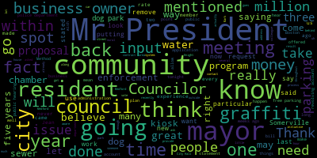

AI-generated transcript of Medford, MA City Council - Oct. 7, 2014 (Unofficially provided by MT)
Back to all transcripts
[Camuso]: The 29th regular meeting of the Medford City Council will be called to order.
The clerk will call the roll.
[Clerk]: Vice President Caravello?
Present.
Councilor DelaRusso?
Present.
Councilor Knight?
Present.
Councilor McCurran?
[Lungo-Koehn]: Present.
[Camuso]: Present.
[Clerk]: Councilor Penta?
Present.
President Camuso?
[Camuso]: Present.
Seven members present, zero absent.
Please rise to salute our flag.
Item number, we're having technical difficulties again this evening with the microphone, so please just bear with us.
The chair recognizes Councilor De La Russo.
Suspension.
14-685 offered by Councilor Mox, whereas graffiti is a significant public nuisance that leads to blight and criminal activity contributing to a decrease in property values and overall quality of life.
Then be it resolved that a graffiti vandalism revolving account be established within the Medford Police Department to provide for graffiti removal on public and private properties.
Councilor Mox.
[Marks]: Thank you, Mr. President.
I offer this resolution tonight due to a meeting that I attended last Wednesday that was offered by the Memphis Police Department, and it was their monthly community meeting they have the first Wednesday of the month.
Myself, Councilor Lungo Kern, and Councilor Caviello were present at the meeting.
That particular meeting was of utmost importance because they were discussing
the issue of the shooting that took place in South Bedford a few weeks prior to that.
And they, at the meeting, and I won't speak on behalf of the police department, let residents know that this is an ongoing and active investigation that's taking place and that they're putting all their resources into finding out exactly what happened and that a step up in patrol was going to happen also within that area.
as well as some recommendations that were offered by the chief about to increase lighting in certain areas in that particular vicinity, and also the fact that additional cameras within the police department would help to help solve some crime within our community.
But, Mr. President, I offer this resolution tonight because at the meeting,
One of the officers spoke up and directed his comments towards members of the city council, stating that it would be helpful, because other surrounding communities do it, if they could have what I would refer to as a revolving account that's within the police department.
I mean, the account, in my opinion, could be within DPW.
It could be here at City Hall.
But to have a revolving account that
Fines, when people are caught doing graffiti, fines of whatever is issued will go directly into the revolving account and can only be used for appropriation to remove graffiti within our community.
I also had the opportunity to look at some of the surrounding communities.
And I noticed that the city of Somerville has a program which they handle similarly with an account.
But they take it one step further on their website.
They also offer, which I'm going to add to my paper tonight, Mr. President, is that graffiti knows no age, no sex, no orientation, no, you know, people vandalize for whatever reason.
It was mentioned that it's done on private property.
As we know, it's done on public property.
As we experienced, it's done in parks.
And it's done throughout the community.
And the fact that someone may tag a public building, it's easy to city contacts.
I know in the past, Mr. President, you work at the sheriff's office.
They've been gracious enough to come out with their itty graffiti machine and clean the graffiti.
But if it's done on private property, some communities have city ordinances that require homeowners to remove the graffiti within a certain amount of time.
And that adds insult to injury, in my opinion.
The fact that you're at home, someone tags the outside of your vinyl siding, and the next day you receive a call from the city saying
You have 10 days to remove the graffiti.
You may not have the means to remove it.
You may need to have the graffiti remain on your house for a period of time for insurance purposes and a whole issue of items.
And why I bring this up is the city of Somerville has a contract, and it's right on their website, and I have copies if anyone wants to see it.
And it's removal of graffiti agreement and release of liability.
And I won't read it, Mr. President.
It's a page long.
But it goes over the fact that if the city is willing to go onto private property and remove graffiti from the side of a home or a garage or wherever it may be, that the homeowner will hold the city free from liability, and they'll remove the graffiti at no expense to the homeowner.
And I thought that's a great idea, Mr. President, to eradicate graffiti in a community.
I know the city of Malden also, just recently in March, they introduced a new service that they provide to residents.
And they modeled it after the city of Boston.
And it's modeled after the Citizens Connect smartphone application.
that the city of Boston currently uses.
And Malden just started this in March.
And they stated that, as an example, if a resident sees graffiti on the street, they would normally call or email the Department of Public Works.
Now a resident can simply take a picture using their smartphone.
With one click, the request is automatically sent to the department.
Once the graffiti is removed, the resident is notified on their smartphone.
that the issue has been resolved.
They stated also in their press release, we are already seeing great results from the program.
Since its release, we have had 576 requests to the DPW.
Not all were graffiti.
These are just requests to DPW.
And 543 were resolved with the balance slated for spring repairs.
That equates to 94% of all issues being resolved via the new application.
And most were fixed within 24 hours.
This is a great, great application.
It's a great way to connect residents of this community to City Hall.
And also, it goes on to say that they thanked, at the time, Mayor Menino and the city of Boston for their leadership on the initiative.
And also, which I found quite interesting, they thanked Governor Patrick and Lieutenant Governor Murray
for offering funding for the applications so communities could take advantage of this technology.
So apparently there's grants or money out there that we can obtain as a community to not only have a revolving account, which is my request, but to also implement something similar to this Connect phone, smart phone.
I know Somerville uses, I think it's 311, Smart 311, I believe it is.
311 to allow residents to contact the city.
They get a response back immediately saying that their request was accepted, the date and time.
And then, within a period of time, they're contacted by the city with updates.
It's just a great way of doing business.
And I would ask, Mr. President, that we not only have the administration look into setting up a revolving account
exclusively for the purpose of graffiti removal in our community.
We also look into this particular Citizens Connect smartphone application to allow residents the expanded means of communicating with the community.
Also, Mr. President, I received a number of e-mails because of this resolution, and one resident who asked if they can appear before the council
Couldn't make it tonight, but will be before the council in the near future, is applying for a mural funding from the Meffitt Arts Council and also from the Senator Charles E. Shannon Community Safety Initiative.
And from what I understand, it's going to be very similar to the mural at the Meffitt Hillside.
And they're looking to put a mural.
I don't want to let the cat out of the bag, because this woman has done a lot of work on this.
But somewhere in South Bedford, they already received approval for a mural.
And this, in my opinion, will go a long way to covering up a wall that is typically, this particular wall that she's referring to, has been tagged a number of times.
And it will go a long way to beautifying the area and also making it less inviting for someone to come out and use that to tag Mr. President.
So I would ask that the paper be amended.
to include the expansion and implementation of the Citizens Connect smartphone, Mr. President.
And I look forward to the mayor's response on this.
[Camuso]: Thank you, Councilor.
Councilor Knight, and then Councilor De La Russo.
[Knight]: Thank you very much, Mr. President.
Thank you, Councilor Knox, for bringing this resolution forward.
I think this is a great proactive approach to improving the quality of life for residents here in the city of Medford.
I will be voting in favor of this resolution and I might ask that the resolution be amended by way of a B paper, Mr. President, which would ask that the Medford police or the building department report back to this council locations that have been reported to have been graffitied within the last 12 months.
I think it's very important that we keep track of this data to determine whether or not there were clusters and trends that are occurring here in the city so that we know where to ramp up enforcement.
So I'd like to thank Councilor Marks for taking such a proactive approach to looking at the quality of life in this city.
And I will be voting in favor of this resolution, Mr. President.
I just ask that it be amended for the Police Department of the powers that be to report back any locations that have been reported within the last calendar year.
[Camuso]: Thank you, Councilor.
Councilor DelaRusso.
[Dello Russo]: Thank you, Mr. President.
I want to also extend my thanks to Councilor Marks for bringing this matter up.
If my memory serves me correctly, I think it was President Emeritus Mayorko
several years ago had suggested an ordinance to deal with graffiti, and I think it got tied down in committee, and one of the sticking points to it, if my memory serves me right, was that this would sometimes, in dealing with the graffiti, one of the things that you've addressed in this is that it can often place the victims of graffiti, the property owner,
also has the additional burden of finding a way to deal with this, get the graffiti cleaned up.
And for some people, whether they might own a home or a place of business, the cleanup of such an act is also a burden and may not be covered
under their homeowners or business insurance.
Um, so I, I'm glad that, uh, in your proposal, we have a remedy for that and, uh, you can count on my support as well.
[Camuso]: Thank you.
Council vice-president Caraviello and then councilor Lungo.
Kern.
[Caraviello]: Thank you, Mr. President.
Um, I want to commend, uh, my council Marks on, uh, on his motion here.
Um, I'd like to see that the city look into possibly buying a machine.
Uh, I mean, all they are is a,
And if there are grants available, why can't we buy our own machine so we don't have to keep going and looking for one?
And also, Mr. President, I'd like to send a letter to the mayor asking him to ask the sheriff if he could come down with the graffiti team and maybe clean up some of the stuff that's down here now.
I don't know if that's already been asked.
Because as I say, there is, like on Harvard Street, I know the T's already cleaned it a couple of times.
And if you get on Forest Street, there's a couple of, there's the big old building, it's been tagged.
It is an eyesore.
There's been some tagging on the side of that sound wall.
As I say, if the Sheriff's Department could come down and help us out there.
But again, if there is some grant money, why can't we buy our own power washer, high end power washer to do that ourselves rather than hiring a company to do it?
[Camuso]: Thank you, Vice President.
On the main motion, amended by Councilor Marks, Councilor Knight, and Vice President Caravaglio, Councilor Lungo-Kern.
[Lungo-Koehn]: Thank you, President Camuso.
I want to thank Councilor Marks for putting this on.
Councilor Caravaglio, Marks, and I were at that meeting, the police meeting, community meeting, and we spoke an hour, you know, we got updates on the South Medford shooting,
The next most spoken about subject was the graffiti and how it's an eyesore, how Somerville is getting tough on their graffiti.
So it's bringing more down, especially in the South Medford area.
But there's people also complaining about it in West Medford, in Medford Square.
It is everywhere.
I mean, people are tagging for fun.
People are tagging to break the rules, break the law.
And I think if Somerville's getting tough on it, I think it's time Medford does too.
put on the agenda and try to get certain spots cleaned up, but I think an ordinance creating a revolving account is a great way to do it, so I thank Councillor Marks for putting this on.
I definitely am in favour of the paper.
I think we need to stop the repeat tagging and just the fact that it's everywhere.
I think we should spend a portion of the money that comes into the revolving account, not only to clean up the
like we spoke about last week, on cameras so that we can catch these offenders.
We can catch them, we can find them, and we can make that revolving account, clean up all the graffiti within our community.
So I would hope that some of that money would go to be spent on cameras.
I also wanted to just, Councilman Marks brought up Citizen Connect smartphone, and I know it goes along with the 311 system that Somerville uses.
I happen to be in Somerville today, and they are giving out magnets.
with regards to if it's not an emergency and you need us or any other city service, you call 311.
I brought this up maybe four or five months ago.
We voted 7-0 to get this installed in Medford, this program.
It will provide accountability and it's something that our residents deserve because I'm sure we're all sick of saying, hearing, when is my sidewalk gonna get fixed?
When is my street pothole gonna be repaved?
all the DPW, you know, they'll say it's going to be done, or you're on the list, especially with sidewalk repairs.
You're on the list, you're on the list.
We really don't know what happens with that list.
This is a way for accountability, for response, and for action.
So again, I'm going to see if I can amend your paper council marks and again vote that City of Medford implement the 311 program.
I think it's
an absolute great idea.
I've spoken to people in the building department at the city of Somerville, and they don't know what they would do without it.
So I think it's time for Medford to become accountable for all the complaints that come in, issues and concerns.
So thank you again, Councilor Marks, and I'd like to amend the paper.
Thank you.
[Caraviello]: Chair recognizes Vice President Caravaglio.
Thank you, Mr. President.
I just want to say one thing.
At the meeting, the chief talked about see something, say something.
I mean, you know, some of these tags, I mean, they're not like one minute tags.
I mean, if you're going to Harvest Street, that had to take a half an hour to do that.
Someone had to be driving by and seeing this and not say something.
I mean, on Forest Street, they climbed up to the third floor of the back of the building.
I mean, so I mean, it isn't that, you know, you're spraying something and you're running away.
I mean, if someone had to see things during this time, again, if you see something, say something, call the police so they can get caught in the act.
[Camuso]: On the motion amended by Vice President Caravello, Councillor Marks, Councillor Lungo-Kern and Councillor Knight.
All those in favour?
All those opposed?
The roll call has been requested by Councillor Marks.
The clerk will call the roll.
[Clerk]: Vice President Caravello?
Yes.
Councillor De La Russa?
Yes.
Councillor Knight?
Yes.
Councillor Lungo-Kern?
Yes.
Councillor Marks?
Yes.
Councillor Panta?
Yes.
[Camuso]: Yes, by a vote of seven in the affirmative, zero in the negative, the motion passes as amended.
Item 14-686, offered by Councillor Penta.
Be it resolved that a comparison of public safety issues compared to the mayor's pay to park proposal be discussed.
Councillor Penta.
[Penta]: Mr. President, I think in part we all know that around 5 o'clock or 5.30 this evening, I think we received the mayor's press release.
that he'd signed the contract with Republic from Tennessee.
But I'll get to that later on.
It's still part of the comparison.
You know, when we came on board at the beginning of the year, we were asked to give what our priorities were.
And I believe the police department and police station was our number one priority.
And unfortunately, it hasn't found itself anywhere in any of the mayor's agendas.
Now, the police station would derive an extreme benefit for our community.
It would make us go forward.
not only socially, but as a community going forward with tomorrow's technology, and it would also give a presence of community policing.
And that's something I think a lot of the people asking for, more police officers, more patrolmen, more visibility.
And if you give them a better place to work out of, then I think that would go a long way.
You know, we paid in excess, I think, of $78,000
when we received the feasibility study from the police department and the fire department on May 5th of this year.
And unfortunately for the police department, they didn't get anything out of it.
Fire department did, but the police department didn't.
And once again, I don't know, maybe it's just the mayor, he doesn't have it on his radar screen, but public safety, I believe is the first of priorities here of any of all the councilors.
Some of the things that Mr. Mayor, that would be beneficial, not only for our community,
is the council has supported, in each and every calendar budget, the recycling of two new cruises each and every year.
And that would go a long way, once again, to add to the police officers on duty, driving their cruises, letting them know that the city is thinking about them, and they don't have to drive in a car that has about 140,000 miles on it, and they don't know if it's gonna make it or not.
I think it was Councilor Marks, three years ago,
came up with the idea of why can't we have a special truck enforcement unit?
It's a great idea.
What's wrong with training one or two people to be involved with truck enforcement for that particular purpose?
Because I think we can go down any one of these streets in any one of these days, and we see the amount of trucks that travel down High Street, Main Street, or the major streets here in the city of Medford.
That would go a long way.
In our public safety issue regarding lighting, all the squares are just dimly lit.
And that in and of itself is an invitation
for some type of crime, whatever the crime might be.
You get Route 16, the parking lot behind St.
Joe's.
This will probably be the 14th time that we've discussed this, and still no lighting.
We've had situations there where a lady called up and she was afraid to get into a car because of people there, and also in a separate situation where a drug transaction was reported.
Also right here in Medford Square, the Route 16 overpass, underpass on Route 93,
has no lights.
Riverside Avenue, go underneath the overpass there, still no lights.
We have asked for the issue of public safety, timely street swiping.
We've also asked for our crosswalk painting.
You're lucky if you see that once a year.
These aren't huge cost items.
These are items that are readily available within our budget.
Now we've talked about police cameras and high visibility locations.
Were it not for the business merchant that owned a store on the corner of George and Winthrop Street a few years, a couple of years back, how they caught the guy that assaulted the young lady from Tufts University.
And as a result of that, Mr. President, we all know that the cameras are beneficial.
We have $8,893 in our linkage account for where they could buy a few cameras.
But if you really want to get into it, we have $6,400,000 in our free cash account.
So I don't think there should be any reason why we can't go out there and buy any cameras.
A bonus to our people that work.
We can review the one day a week and swap day reward.
And that would be for those officers with a perfect attendance for six months.
Something different, something creative for the police officers.
rather than the annual, it's on a six month basis, and that might work out, it's a tryout, it's something to think about.
I think we should also think about revisiting the idea of having retired police personnel be part of the parking enforcement proposal here in the city of Medford.
Because that in and of itself, that in and of itself would bring a big luxury, not only to the people here in this community, but I think to the business people who would have a better idea of knowing
when and how to tag certain folks.
Because we really don't know what this out-of-state company from Tennessee is going to be like.
They could just be, I don't know, they're going to start at 7 o'clock in the morning to 7 at night.
It doesn't make any sense.
Boston doesn't even start till 8 o'clock in the morning.
We have a civil defense system that needs to be addressed.
Since Mr. Mangone has passed on as its civil defense director, I don't know where it is.
Is it in limbo?
Is it going to be used?
If not,
We've talked about a snow emergency system, and we haven't heard anything back on that.
And I think we're all aware of the fact that a snow emergency system of some type needs to be in place.
And taking some of these issues and putting them on the left, then I go to the right, and I look at this idea of this new proposal that, if you agree or disagree, the mayor signed into effect apparently today regarding this Tennessee firm Republic.
regarding a traffic enforcement program that's going to be six days a week from 7 in the morning to 7 p.m.
at night.
There'll be no free parking on the streets.
According to the mayor's commentary, there's going to be two 30-minute parking spots in each one of the squares, and there'll be four paid single-space meter spots in each of the four square districts.
Other than that, there'll be kiosks allotted.
It's kind of like interesting because if you look at the commentary made by the director from the Memphis Chamber of Commerce, Mr. White, he indicated that he was hoping that he would have an opportunity with its members to sit down and discuss this.
And he also made reference to the fact that each and every one of the squares have unique positions, unique concerns as it relates to businesses and how they might be affected.
How the mayor came up to this resolution and signing, I don't know.
But it's kind of like unfair because we were in that meeting on September 10th, and we were told that he would get back to us.
We were told that there'd be a public meeting for which this council voted seven to nothing.
He never honored that.
We were told also that the concerns that would be brought up would be addressed and to have an idea.
I don't know, and we don't really know what part of the business community, what businesses are going to be exempt from not having a meter or a kiosk anywhere in that particular area.
You take these two things and you ask yourself, the Memphis Police Department and public safety is such a huge issue here in this community.
And some of the samples that I just talked about still have yet to be addressed.
But the mayor thinks it's more important to go forward with a parking enforcement program, strike that, a paid to park program with enforcement that's only going to bring in $300,000 the first year and $700,000 from the second to the ninth year, it's the 10th year.
May sound like a lot of money, but my feeling personally would have been, had the city decided to go forward after that meeting on the 10th, having an opportunity to listen to the folks within our community, listen to the business in the community, all four areas of this community, rather than have one size fits all, which includes Medford Square, in the press release as outlined tonight at 510,
I just don't think it serves in the best interest of our community.
I don't think it helps our police department, and I don't think it gives the community in and of itself a fair shot as it relates to priorities that need to be addressed rather than another money enhancement for the city of Medford.
Mr. President, today, as you know, I'm assuming all of you know that the mayor signed this contract tonight around 517 or thereabouts.
He signed the contract.
And he makes a notation that the council was in support of this.
What the council was in support of was that on May 20th, when we had that meeting, we had agreed to the three vendors that came in, one would be selected, which was Republic from Tennessee.
But we agreed to that somebody would come back after he had negotiations and we would discuss it.
And we did on September 10th.
But when the pushback came back, the mayor decided not to go forward at that time.
And speaking to Mr. Skelton,
are referring to Mr. Skelton's comments from Republic.
From the 10th to the 25th of September, there was absolutely no communication between the mayor and Republic.
So something had to take place from the 24th to today, the 7th.
And taking that into consideration, it's quite obvious that the chamber's concerns, oh, I don't know who wrote the letter because we don't have a copy of the letter.
He says he got a letter from the chamber.
But when you have four separate squares, including Memphis Square, which makes five, and their issues are all unique,
and they needed to be heard, and they weren't heard, and the mayor decides to have one size fits all, I don't think that's what you call a happy resolution, especially to the business people and to the taxpayers of this community.
You know, the fact of the matter is this.
We're getting rid of people who don't live in the community, who were parking at spots all day long, and they haven't been tagged.
And this has been going on for the entire years of the administration of this city, this mayor.
And now what we're going to be doing is tagging, if not towing, and telling our own taxpayers in this community, you people are going to have to start paying.
Now, right up front, no free parking unless you are lucky enough to get one of those two spots in any one of the four or five sections of this community.
Where it's going, I don't know, Mr. President, but all I can tell you is this.
If I had to put my money on something, I would put it on public safety, the police department, the personnel that's needed to keep this community safe,
And more importantly, the subject matters that I brought up under the police department.
Those to me are pressing needs.
They have no comparison, no comparison at all to a parking paid to park program or enforcement.
If the mayor was so concerned about that paid to park program and enforcement, he should have done it years ago, but he didn't.
And when they knew that people from Winchester and other communities were coming here and parking all day and not getting tagged and ticketed, he should have done something, but he didn't.
So,
put $300,000 this first year out of the box, compare everything to what the police department needs to keep our community safe and protected.
It's pale in comparison.
And with that being said, Mr. President, I just wanted to say that, um, I just think, you know, this council is either going to be committed to public safety and a new PlayStation and the police department, or this is nothing more than hot air every Tuesday night when we come here to talk about public safety.
We have more than enough examples.
And I think we have more than enough good police officers.
The shooting is just a drop in the bucket compared to all the drug problems that are existing throughout this community.
And that's a concern.
And if they had more personnel, and if they could go to court, and if they had more of the mechanisms and the technology that is needed, it would be great.
You know, when you talk to someone, you say, hey, you're building a brand new public works department, $14 million.
$14 million.
Still don't even have enough men to man it.
But you have a police department that's ready to fall apart.
You have an evidence room that's completely out of control and a whole host of other issues.
So, I would say, Mr. President and my fellow colleagues, that I think it's time that we take the stand and we tell the mayor we want a new police station.
I don't care how you fund it.
You found the money for a public works department, then find the money for a police station.
Because you're not going to make one seem to be more important than another.
And at the same time, you're not going to put the lives of this community and the folks in this community at risk.
[Camuso]: Vice President Caravaglio.
[Caraviello]: Thank you, Mr. President.
I echo some of Councilor Pinto's concerns here.
Last week, after the meeting, the next day on Councilor Longo's motion on the cameras, I received a call from a gentleman from Medford, who that's what they do, about cameras.
And he'd be willing to come down to meet with the chief
He said the cost of the camera is approximately $5,000 per camera.
And this company does multiple cities and towns police forces.
So I told the chief I would refer the number over to him.
At the meeting that we were at at the police station, I did ask the chief about using retired policemen to man details and do other things.
And the chief was steadfast against that.
He said he had safety concerns.
liability concerns about using recently retired policemen.
And my point was, many details go unmet because you can't find anybody.
Why couldn't you use somebody that's recently retired to come on?
But he didn't want to hear it.
One last thing, talking about the parking, one of the things I would like to see in here was maybe some type of a one-ticket amnesty program for people who
just made a mistake or whatever, for whatever reason, for maybe the first 30 days to maybe help out.
And I'm going to reiterate again what I said on our first meeting in the parking.
If this is going to generate $18 to $20 million, I'd like to see all the money generated go toward the police station.
I mean, if we're going to go out and bond for that, let that $18 million pay for the bonds.
rather than put it into the general fund.
I mean, if the numbers that they give are correct.
So I don't know what my other counselors think about that motion.
[Camuso]: All right.
Is there a motion?
[Marks]: Mr. President.
Counselor Max.
Thank you, Mr. President.
just read over the email that we all received, too, regarding the mayor signing the contract.
And, you know, I find it ironic, Mr. President, that in the mayor's opening statement, he said the city's goal is to provide the best possible parking experience for its citizens.
And you would think, Mr. President, over the last several years that this would have been a goal of the administration.
There was a spotlight, I believe it was done by Channel 5 about six months ago regarding the lack of enforcement for resident permit parking in the community.
It didn't exist at all.
So at that point, the mayor wasn't trying to provide the best experience for citizens in our community.
He also said in his statement that the objectives of this program are to deter illegal parking,
to ensure timely turnover of parking spaces, to benefit and enhance the business districts, and to create a friendly environment for consumers.
Mr. President, what was asked for back in 2009 was to enforce existing signage.
That was the recommendation back in 2009, to enforce existing signage and be consistent
which never took place in this community.
So if we had consistent enforcement throughout the community, there would be no need to hire an outside company from Tennessee to outsource it to Tennessee.
We all know the contract is based on performance.
And that will result, not could, it will result in very aggressive ticketing in this community.
it will result in aggressive ticketing in this community.
So if the mayor was really intent on putting the best possible parking experience for citizens, all along, he would have provided consistent enforcement by our own in-house personnel to move these cars along.
I agree with that.
However, I don't agree with hiring an outside company, Mr. President.
It also goes along to state that one of the benefits of this particular program, and I'll quote it, it says, the chamber also acknowledged that there are several beneficial aspects of the plan, such as the user-friendly kiosk.
I've been talking to residents, I've been talking to business owners throughout the community, it's a hot topic, and I haven't heard one resident so far say, you know what,
I don't mind getting out of my car in West Method, walking four or five car lengths, which may even be a little further because there's hydrants and there's bus stops and everything else within this community crosswalks, putting my plate in the kiosk,
putting my time in the kiosk, putting my money in the kiosk, and going in the West Method Spa and getting a newspaper and going back to my car.
I haven't heard one resident say that they feel that's a benefit, that they feel that that's a good idea.
Mr. President.
So, I'm not quite sold on the use of kiosk on the streets.
I don't know any other community in this surrounding area that use kiosk on the streets, Mr. President.
I don't believe it's user-friendly.
And I believe, as was mentioned at our meeting a couple of weeks ago, that if you happen to be stopping in one of our business districts and you happen to have your kids with you, or you happen to be taking your elderly mother to a doctor's appointment,
It's not user-friendly to walk several spots to put money in a kiosk, Mr. President.
It was also mentioned that the mayor was willing to settle or compromise with the business community in giving free spots throughout the community.
And that was very admirable of the mayor, but let's break it down for a second.
This plan calls for 1,000 parking spots, roughly 1,000 parking spots.
The mayor, under his new proposal that he just signed, is allotting two parking spots for 30-minute free parking in five of the business districts.
So that's 10 spots.
That's 1% of the total parking spots.
So this great, grandioso plan that the mayor came down and
decided with the business owners who were all advocating for some sort of free parking, albeit limited free parking, but some sort of free parking.
Now, the mayor was gracious enough to give us 10 spots citywide.
So if you happen to be in Method Square, there may be a spot down by the CVS, down by Carlene's.
And there may be a spot on the east side, all the way down by City Hall.
Those are your two spots for free parking.
Doesn't seem like a lot to me, Mr. President.
And I don't think it's what the business owners intended on.
Secondly, Mr. President, this council asked several times, and recently a couple of weeks ago, to hold a public hearing.
to allow residents, business owners, anyone interested to come up and address the council, address the mayor, address the administration, address this company from Tennessee, and the mayor refused to hold a public hearing.
He kept on going back saying, don't forget, there was a public hearing in September 2009.
Mr. Mayor, that was five years ago.
Things change in five years.
There are new residents in this community over the past five years.
There are new business owners in this community.
There are new challenges facing our residents and our business owners.
And to go based on a hearing that took place five years ago, the mayor must have his head stuck in the sand.
So there was no input from this council, and I speak for myself.
And I'd like to know if any member of this council was able to effectively make change in the mayor's proposal.
I'd like to hear it.
Because every time I offered something, the mayor just poo-pooed it.
Oh, that can't be done.
We can't do it like that.
This was the mayor's proposal from the start.
No one had any input, the business owners, nor the residents of this community, Mr. President.
I know the mayor, in his statement, keeps on going back, saying the business owners and the chamber are on board.
What about the 56,000 residents of this community?
What input do they have?
They're the ones that traverse the businesses.
They're the ones that go to the schools and the churches and the medical appointments in this community.
Why do they have no input, Mr. President?
You know, I don't know why the mayor decided to craft this program in a vacuum.
He crafted it, as he stated three weeks ago, with members of his departments.
That who has ultimately made the final decision.
Members of his department heads made the decisions.
And then once the program went out for RFP, request for proposal, and came back, the mayor was about to sign it.
And he thought better of it and said, let me have the council do a committee of the whole meeting.
where business owners came down, the ones that did know about it came down, and they offered many suggestions.
And I talked to a business owner tonight that was at that meeting, not gonna state his name, and he wasn't aware of the mayor just signing this, but I asked him, is that acceptable, two spots?
And he said, absolutely not.
And he thought he was gonna have some input.
And he had no input at all.
So I don't know who the mayor met with, as Councilor Penta mentioned, but this was a decision made strictly by the administration.
If the mayor was so concerned about providing such an experience for parkers in this community, why did he let resident permit parking go for so many years without enforcement?
But he collected the fee for the permit.
He didn't let that go, Mr. President.
He made sure he collected the fee, but he didn't provide the enforcement.
The mayor allowed people to park from Winchester and Arlington and West Bedford for years and take the commuter rail in, and take the buses in.
He allowed them to park in Bedford Square and Haines Square for years, Mr. President, without enforcement.
So, you know, I'm not sold on this program, Mr. President.
Councilor Caviello just mentioned the fact that
retired police officers possibly doing the role in-house.
I offered back some years ago, Mr. President, to look at having crossing guards who I spoke to the union president, said they would be more than happy to do that task.
They already have uniforms.
Many of them are already trained.
And at the time, it just fell on deaf ears to take this in-house.
The mayor went off, signed it, Mr. President.
I wish him well on this, but I wish there were more public hearings.
I wish that there was more input from the community and from business owners in this community, Mr. President.
And I wish we had some time.
We waited this many years.
I wish we had some time to really sit behind the table like we did a few weeks ago and really iron out some of the differences.
And we really didn't have that opportunity.
And I think the mayor fell short of the mark on this proposal.
And it's going to come back.
At some point, when the aggressive enforcement starts, it's going to come back.
And the mayor is going to do everything he can to hide behind the issue, like he did in this letter, stating, if you read half the letter, half it's about the council votes.
What member behind this reel voted on the proposal?
We voted to allow the mayor to enter into a 10-year contract because of state statute.
My vote wasn't predicated on what was involved within that proposal.
My vote was to allow them because all three bids came back for 10 years.
So at the time, the mayor presented it to us saying, I can't negotiate at all because I don't have the authority to go and negotiate anything over three years.
You have to give me the ability to negotiate.
And that's what this council did.
We never voted on the terms of the agreement.
Not one time did we ever vote on the terms of the agreement.
Thank you, Mr. President.
[Penta]: Mr. President, um, I guess I missed this when I was reading it.
If you read the bottom of the mass comment, it says the chamber also acknowledged that there were several beneficial respects to the plan, such as user friendly kiosks, whatever that means.
After deliberating and discussing concerns raised by the business community, the mayor is recommending the following changes to the plan.
He's recommending,
This isn't a finality.
If you go to point number three, it says recommend $250,000 of the revenue generated on an annual basis to be dedicated to the business district improvements.
It's a recommendation.
This isn't a done deal.
And if you have $250,000, what district gets it first?
North Medford, South Medford, Boston Ave, Medford Square?
Where's the determination there?
And then the last one, retain business and commuter permits.
What does that mean?
All subjective commentary.
I don't even know if this is really the done deal.
All he's doing, he's saying he signed it.
And I'm wondering if these are still things to be negotiated.
He's recommending.
These are recommendations.
They may be just sticking to the original part of the plan and getting back to what Councilor Marks alluded to.
Not only is it going to be aggressive enforcement,
But why would you start at 7 o'clock in the morning?
Boston, which is much bigger than Medford, starts at 8.
Brookline, when they had their kiosks, they had to take them away because they were hurting the businesses.
And then if they're even recognizing by putting meters, single meters, in certain parts, well, maybe they should think about just putting meters, period, and see how that goes, and have local people do the enforcement part.
But the more I keep reading this thing, words stand off a lot.
It's the terminology that's used.
He's recommending.
So I don't even know if this is a done deal.
None of us know.
It's two 30-minute free parking spaces in West Medford.
Well, who's in West Medford?
Who's it going to be?
Has that been determined yet?
They're going to flip a coin?
Go to Boston Avenue, you're going to flip a coin?
The whole length of that street, two free parking spaces?
And then four paid single-space meter spots.
in each of the above listed districts.
Who's going to get those four?
And as I said before, what businesses are going to be excluded rather than included?
You know, the law is very specific on this, and I said it to you last week, and I'll say it to you again, and I said it to our chief procurement officer.
The responsibility of bringing the contract forward was from the chief procurement officer, not from the mayor, and not from the budget director.
That's what the law says.
And there needed to be a recommendation in writing with a comparison of doing it in-house as compared to doing it out-house.
And in this situation, we never got it.
We never got the recommendation and how that recommendation was determined so as for the council to make a legitimate vote to go forward to accept it or not.
So there's a whole host of issues that surround not only the mayor signing this or even getting to the point to having him sign it, but the fact that he lied
He lied to we, the people, by not coming and having the public forum for which seven members of this council voted on, to at least have a public forum, to at least have the business community, and at least have the taxpayers, the residents of the community, to come and speak up about it.
I think we're all getting our emails, and people are just, once again, hearing about it.
Some of them, not that they're for it, not some of them against it.
They want to know more about it and how it's going to work.
But apparently, the mayor doesn't want us to know.
It's quite obvious.
He certainly doesn't want the taxpayers and the residents to know.
And however he chose what businesses that he met with, who knows what businesses they were that convinced him to go forward with this.
It's a damn shame, because I don't think this serves in the best interest of our community.
[Camuso]: Thank you.
Name and address for the record.
And if you are here on behalf of an organization, your title and the organization, please.
[White]: Absolutely.
My name is Jonathan White.
I'm a lifelong Methodist resident.
I reside at 30 Woodland Avenue.
I'm also a business owner within the city.
I have an office at 0 Governors Avenue, and I'm here as the president of the Medford Chamber of Commerce.
Excuse my voice.
I just got off the ice coaching little kid hockey, so I'll do my best to project.
Thank you.
I'm going to be unequivocal.
The Medford Chamber of Commerce supports parking enforcement within the city of Medford.
We have supported parking enforcement within the city of Medford since 2009, when the issue first
came to light.
We recognize that our members in the different business districts have different needs, have different concerns as to the parking enforcement plan that we saw in September.
So as a chamber, we decided in supporting parking enforcement not to advocate for any specific need so as not to alienate any members from our overall membership.
but instead to provide them the opportunity to be heard.
We succeeded in that.
My understanding, and I haven't seen the paperwork yet, so excuse my ignorance, my understanding is the concerns were heard, there were compromises made, and there's an agreement in place that basically takes a little bit from each of the Chamber's members' concerns to make an overall plan
I've heard each of the concessions.
I'm very satisfied as the president of the Chamber of Commerce with this, and I'm very happy to have been part of the process.
For the record, since I'm here, there was an article in the transcript last week.
The reporter misquoted me, took my quotes out of context, and misconstrued.
We never once asked the mayor to not sign the document.
but we asked him to make sure he continued to keep us involved as he completed the process, just as he had since 2009 when this first started.
If that meant he was delaying it, let us know.
Let us know the time frame.
Give us the opportunity to participate the way we have all along.
Thank you.
[Camuso]: Thank you.
Councilor Block?
[Marks]: Mr. President.
And I appreciate Mr. White being here on behalf of the chamber.
You just mentioned that you've participated in the process all along.
Other than the meeting we had a few weeks back, Jonathan, what other participation has the chamber had in crafting this particular proposal?
[White]: So, understanding, I'm the current president.
I was the clerk.
or general counsel for the past two years before that.
Obviously, I do have knowledge of what occurred before that, because my mother was the executive director.
So going back to 09 and moving forward, my understanding from 09 for the first few years was that the then executive director, Cheryl White, was working directly with the mayor's office on this issue.
She was reaching out to the chamber members in the different areas to find out what their concerns were.
And then that's, you know,
I think the history after that is there was the committee that you sat on was made.
But while that was happening, the mayor was consulting with the executive director.
Excuse me.
Moving forward, when the issue came forth during my presidency, he let us know about the meeting.
We circulated that to our membership.
And we attended the meeting.
I think you saw me sitting in the back over someone's shoulder.
But we attended the meeting.
After the meeting was had, he allowed me to obviously talk to him about what the business in the chamber felt.
We encouraged him to listen to what all the businesses were saying and act appropriately.
And he did that, and he called me this afternoon to say what he was about to do and how he took into account what the Chamber of Commerce, its members, and let's face it, not every business within the city of Medford
are members of the Chamber of Commerce.
I wish they were.
That would make a great presidency for me if I could grow it to that extent.
Nevertheless, I do believe the way to entice businesses to join the Chamber of Commerce is to show them what we as an organization do for businesses as a whole.
So I know that in taking our decision-making into account, we not only considered our members, but the businesses that are not yet members as a way to entice them.
So I know that when he told me the concessions he had made,
It said to me, as the President of the Chamber of Commerce, and quite frankly, as a business owner, I'm right in the thick of it.
I'm at zero governor's app.
I have real estate closings that go late because we can't find spaces.
So I understand from a practical level, too.
He took those concerns in.
He made a plan that'll work.
I think the satisfaction of everyone when you look at the overall plan, and that sums up the participation we've had in this process.
[Marks]: So just so I understand, if he was
The mayor was consulting with the past executive director.
Why were so many business owners caught off guard of what actually was in the proposal?
And I'm not quite sure that I buy the fact that the chamber has had so much input in this proposal because the input really didn't take place until three and a half, four weeks ago.
And as you mentioned, this has been a process since 2009.
This has been an ongoing process for five years.
So I guess why all of a sudden in the last three weeks was it that the chamber was invited to the table to give input when supposedly there was open dialogue and input from
the chamber for the last five years.
I don't understand why he took such a direction.
If there was that much input for the last five years from the chamber, I would have think some of the issues would have been addressed.
And really, the issues that I hear from business owners weren't addressed, still really aren't addressed, but weren't really talked about until three weeks ago.
[White]: As far as why we got back into the process, we'll have to talk to the mayor about that.
Obviously, I didn't make that decision.
I'm not in his head, so he'll have to answer that.
The businesses, I think, that are having a lot of issues inconsistent with the chamber aren't our members.
I'm very aware.
I'm going to speak specifically to the September meeting, because I was there.
I observed the meeting with all my senses.
The businesses that were the most vocal are not members of the Chamber of Commerce.
I don't know which ones you're referring to.
The ones that were the most vocal at the meeting were not members of the Chamber of Commerce.
I don't know.
I can't answer that.
You can answer that.
I just did.
the ones that are the most vocal aren't our members.
So that's the answer.
[Camuso]: Councilor Penta.
[Penta]: I have four questions.
First of all, you said that they took your quote out of order.
So I'm going to read this quote.
You tell me if it's accurate or not.
We're going to let McGlynn quote, no, it's obvious to us that the different business districts have different needs.
White said, we're not going to advocate for any specific district.
We're going to provide opportunities through us to get those voices heard.
True or false?
[White]: That one section is true.
It's true.
That one section.
[Penta]: So if that's true, and you're recognizing the different needs of the different areas, how can you go along and have one size fits all for all four districts?
[White]: It doesn't.
Do you have the whole article in front of you?
Yeah.
OK.
Read the very first sentence of the article after that line.
There's no quotes in it.
It's him saying what I said.
Read that sentence out loud, please.
[Penta]: Go ahead.
[White]: It says in West Method Square, for example?
No, the very first article in the very first sentence.
[Camuso]: If I may, from the chair, we're not going to do the people's business based upon a newspaper article.
If you have specific questions for the chamber, all right.
Then ask your questions, and we're not going to go doing our business based upon it.
[Penta]: That's that part there.
You said the chamber supports this.
How many members in the chamber?
[White]: The present count to this very day, you want paying or not paying?
Because we have this dispute right now over who's a member and who's not.
Because some people say they are, they've applied, but they haven't paid.
So that number is with our executive director.
[SPEAKER_07]: Pardon me?
[White]: That number is with our executive director.
It's the numbers between 200 and 300, depending on who's paid and who is unpaid.
[Penta]: So you have votes from the 200 plus members?
No.
So how does the chamber make a decision?
If you have membership.
[White]: We have a board of directors that leads the change.
[Penta]: So your board of directors made this vote, not the membership.
[White]: We have a board of directors.
We have a government affairs committee.
The government affairs committee met.
I'm going to finish.
The government affairs committee met.
We stated our position.
We brought it to the board and that's our position.
[Penta]: Okay.
Let's get this straight.
[White]: Are you a member of the chamber of commerce?
No, I'm not.
Why not?
Why should I be?
Are you a part of the community?
[SPEAKER_07]: I, you know, something you just made a comment a minute ago.
Are you part of the gentleman please?
One at a time.
Mr. White, you just made a comment a minute ago.
[Camuso]: I have the, the council is going to have the floor and I'm just going to ask that we keep this civil for the purpose of moving the city forward.
[Penta]: You just made a comment at a minute ago that some of the people that are at that meeting on the 10th aren't members of the chamber.
Yes.
So because someone is not a member of the chamber,
They're not going to be looked upon with the same favor that somebody might be.
They're a business person in this community.
[White]: That's not a question for me to answer.
Pardon me?
That's not a question for me to answer.
I represent my members.
[Penta]: OK.
You represent your members.
And you also said that the business community was aware of that meeting on the 20th.
[White]: Yes.
[Penta]: I mean on the 10th.
Excuse me.
Yes.
At 117 in the afternoon.
That's when the emails went out.
117 of the day of the meeting.
And a lot of people didn't even get it because they were still at work and not knowing it.
So that's not a well-advanced notice of people of a public meeting regarding their living.
The President.
[White]: Are you saying the chamber member emails went out at 117 the day of the meeting?
Mr. Kudlow.
That's the meeting.
The President.
I will disagree with that.
[Penta]: Mr. Kudlow.
[Camuso]: It was a public meeting that was advertised for more than 48 hours, according to state law.
[Penta]: Mr. Kudlow.
Also, Mr. President, I do want to get back to this thing that if Mr. White feels, on behalf of his membership, that this one-size-fits-all is going to address the concerns
of the five separate, the four squares and the downtown method.
I'd like to have you explain that.
How can this one size fits all?
[White]: How can it not?
Pardon me?
Would you like to install a parking program that is different in one part of the city and different in another part?
And how do you solve that problem when you have the other districts looking and saying, why do they get this?
Why do they get that?
Well, it was your call.
[SPEAKER_07]: Mr. Penta, I practice.
It was your call.
[White]: I'm still answering your question.
I practice law throughout the Commonwealth of Massachusetts.
I spend most of my time in Salem, Massachusetts, at that registry, in Dedham, Massachusetts, at that registry, in Cambridge, Massachusetts, at that registry, Boston, Massachusetts, at the Suffolk registry.
I pay to park everywhere I go.
I see all different kinds.
Kiosks, kiosks where you have to leave your stickers, meters, central pay stations.
two-hour parking spots, one-hour parking spots, a half-an-hour parking spots, 15-minute spots.
If I'm running in somewhere, I may not put a quarter in.
What I can tell you is you can't do a program for each section of the city.
You're either going to pay to park, or you're not going to pay to park.
[Penta]: So then your quote in the paper was wrong.
You did not indicate that each part of the city is unique.
[White]: The position of the Chamber of Commerce is that we support parking.
We recognize in supporting that that our members have different needs.
I'm not here as the president to advocate for each district, because they conflict with each other.
What someone in West Medford wants isn't what someone in Haines Square wants.
[Penta]: Mr. President, I think we need to get a report back that are these four points recommendations, or are they actually part of the contract?
Because it's the mayor who uses the term, he's recommending changes.
It doesn't say it's not definitive, it's recommending.
And with that being said, with recommendations, I don't know if it's a contract or not.
I don't know.
[Camuso]: I specifically asked that question, but I know you're not going to want to hear it from me, so I'll support you asking those questions to the mayor.
But it will be part of the binding contract of what the mayor said to me today.
But I have no problem asking him that in writing.
And thank you for carrying on your mom's legacy with our business community.
[White]: Thank you very much for giving the opportunity to be heard again.
I apologize for the hoarseness and the Chamber of Commerce is always available.
[Camuso]: Thank you.
On the motion of Councilor Penta that we get a, Councilor De La Russo.
[Dello Russo]: Could I amend the motion, whatever it may be, to include a request to the mayor's office to provide each member of the Medford City Council
with a copy of the signed document.
[Camuso]: On the motion, as amended by Councillor Penter, to ask the four questions if their recommendations are if they will be binding in the contract.
And the second amendment is from Councillor DelaRusso to furnish each member of the council a copy of the contract.
And in the interest of being environmentally friendly, do we prefer a certain way?
Because the last paperwork they sent us was on a CD, which was about over 100 pages long.
[Dello Russo]: So is there a particular manner we'd like to get this?
I'd prefer paper rather than a petroleum-based product.
[Camuso]: Paper.
Okay.
So why don't we let the city clerk know how we'd like it, because I'm sure certainly some of us would like it on electronic format.
Name and address for the record.
[Viglione]: Joe Villione, 59 Garfield Avenue, Medford, Mass.
I have a question.
Does anyone know if city hall parking is going to be pay-to-park, and if we'll have to pay to pay our excise tax?
and pay to come here to the city council where I see four or five people tonight?
It's a very important question because this resident worked hard on taping a video for transparency in this city for people to see.
This council, regrettably, chose not to help me get it on the air, and now we have this, what this resident considers a travesty.
The businesses need to gather together, whether they're with the chamber or not,
and consider litigation against the city to stop this.
I think that's the only thing that we can possibly do.
With all these problems in Medford, we're gonna have to start litigating.
[Camuso]: On the motion, as amended, all those in favor?
Roll call has been requested.
The clerk will call the roll.
We'll have a second polling of the membership to find out if they want it in electronic format.
The first question will be called to support the resolution as amended.
Call the roll.
[Clerk]: Vice President Caravaglio.
Yes.
Councilor Dela Russo.
Yes.
Councilor Knight.
Yes.
Councilor McKern.
Yes.
Councilor Marks.
Yes.
Councilor Penta.
Yes.
President Camuso.
[Camuso]: Yes, by a vote of seven in the affirmative, zero in the negative, the motion passes.
The second B paper now, we will simply ask if you want the copy of the contract in electronic format or on paper.
That's what the councilor asked.
We'll let the clerk know.
Yeah, we'll let the clerk know.
Right item 14-6 88 offered by Vice President Caraviello City of Medford call for state election November 4th 2014 be it ordered that the city clerk be and he is hereby authorized and directed to notify and warn such are the inhabitants of the city of Medford as Were qualified by law to vote for candidates at the state election on Tuesday, November 4th 2014 to assemble at the polling places in their respective wards and precincts then and there to give in their votes for a senator in Congress a governor
a Lieutenant Governor, an Attorney General, a Secretary of State, a Treasurer, an Auditor, a Representative of Congress, a Counselor, a Senator in the General Court, a Representative in General Court, a District Attorney, a Register of Probate, and such other vacancies and questions as may exist or occur in the polls of said state primary shall open at 7 a.m.
and remain open until 8 p.m.
be it further ordered that the following named polling places be, and they are hereby designed for use at the state election on November 4th, 2014.
Voting precincts, Ward 1, Precinct 1, Andrews Middle School.
Ward 1, Precinct 2, Firefighters Club on Salem Street.
Ward 2, Precinct 1, St.
Francis.
Church, Parish Center, Felsway and Fulton Street.
Ward 2, Precinct 2, Roberts Elementary School, 35 Court Street.
Ward 3, Precinct 1, Lawrence Memorial Hospital, 170 Governor's Ave.
Ward 3, Precinct 2, Temple Shalom, 475 Winthrop Street.
Ward 4, Precinct 1, Tufts University, Gantcher-Santa Ria, located at 161 College Avenue.
Ward 4, Precinct 2, Walkland Court, slash Auburn and North Street, and that is known as the Fondacaro Center.
Ward 5, Precinct 1 and Ward 5, Precinct 2 will both be located at the Columbus Elementary School at 37 Hicks Avenue.
Ward 6, Precinct 1, West Medford Fire Station, 26 Harvard Ave.
Ward 6, Precinct 2, Brooks School, 388 High Street.
Ward 7, Precinct 1, Mystic Valley Towers, North Building Entrance.
Ward 7, Precinct 2, McGlynn School, K-8 Public School, 3004 Mystic Valley Parkway.
Ward 8, Precinct 1, Senior Center, 101 Riverside Avenue.
Ward 8, Precinct 2, Veterans of Foreign Wars Hall, 114 Mystic Ave.
I await a motion.
On the motion of approval by Councilor DelaRusso, seconded by Vice President Caravigliano,
Question, Councilor Prenta.
[Penta]: Clerk, do you have enough poll workers?
[Clerk]: It's really hard to tell, but we usually fill the slots.
I mean, you can't tell.
You can't tell up until, I hate to say, election morning sometime.
But right now, yeah.
[Penta]: During the last election, there was some concern over some of the ballot boxes not working.
Is there any of these?
[Clerk]: That's a possibility.
[Penta]: But aren't these all checked out before?
Oh yeah.
Yeah.
[Clerk]: Yeah.
I mean, you gotta, you gotta remember they're all checked prior, uh, but the transporting from city hall to the actual poll place itself, something that happened, come off the truck.
You know, I think it, uh, uh, it's not the tabulating machine at the, that was wrong with it.
It's the, uh, black bar back with the velcro is in there.
There's a little arm that goes back and forth, and it got dislodged from Public Works, putting it down.
So it was just, you know, it was tabulating fine.
It was just a matter of, we got to replace the old.
[Penta]: Those all rechecked each and every election?
How does this work?
[Clerk]: Yeah, I have to do everything.
The week prior to that, I do all the machines, handicap and tabulated machines.
[Penta]: And for the sake of a public announcement, Mr. President, when can people start getting an absentee ballot?
[Clerk]: This week, yeah.
This week?
Yeah.
As we speak.
As long as they're going to be out of town, disabled.
[Camuso]: Physically unable to attend.
[Clerk]: Yeah.
[Camuso]: All set, councillor?
Yeah.
On the motion.
All those in favour?
Aye.
All those opposed?
The ayes have it.
Chair recognizes Councillor De La Russo.
[Dello Russo]: Motion, Mr. President, to suspend Rule 33 to take papers in the end.
[Camuso]: We got one paper that has to do with the election, actually.
Take it now.
Right under suspension of rule number 33 offered by councillor Camuso be it resolved the Medford City Council cancer cancels the November 4th 2014 City Council meeting and that is for the state election in November 11th 2014 in observance of Veterans Day, which is on Tuesday this year, which usually is on a Monday All those in favor All those opposed the ayes have it offered by councillor Penta
Be it resolved that a congratulatory message be sent to our Assistant City Clerk, Dorothy Donahue, on the wonderful occasion of her son Jim Donahue's first child, Annabelle, and Dorothy's newest grandchild.
Councilor Penta.
[Penta]: Mr. President, Dorothy, as we all know, is our wonderful assistant in the clerk's office with Mr. Finn, and she works very hard through the years, and she's now being able to enjoy her grandchild, her son's first child, which would be her grandchild,
And we want to wish her the best.
[Camuso]: Thank you, Counselor.
All those in favor?
[SPEAKER_04]: Aye.
[Camuso]: All those opposed?
The ayes have it.
Offered by Counselor Marks.
Be it resolved that the mayor provide the council a complete itemized list of money set aside for Dog Park, including who donated the money and when.
Counselor Marks.
[Marks]: Thank you, Mr. President.
For those that are not aware, there are many petitions circulating the community right now for support.
of a dog park in this community.
We were promised back in 2011 by the mayor that he was going to implement a dog park somewhere within our community.
And I am asking now for a complete itemization of the money that the mayor supposedly accepted from J.F.
White bridge construction, which was mitigation money.
back in, I believe, 2012.
And also, September 2010 was the Meffitt Jingle Bell Committee.
They had a dog show and raised money for the dog park.
Also, the Doggie Fun Run at Hormel Stadium, which was in 2013 and just recently held in 2014.
14, and also the Boston Volunteer Solutions Incorporated donated $1,766 to develop a dog park.
And I would like a complete itemized list of the different groups and organizations that have donated the money, when it was donated, and how much is in that account as it currently exists, Mr. President.
[Camuso]: On the motion of Counselor Marks, Counselor Knight.
[Knight]: Thank you very much, Mr. President.
I think it's very important that we recognize the efforts and the leadership that Councilman Marks has put forward on the issue of a dog park.
Not only has he brought this issue to the council floor, he's actually put his money where his mouth is.
He's gone out, I witnessed him personally collecting signatures from members in this community to seek support for a dog park, Mr. President.
And that's the proactive grassroots type of work that makes the community really come together and it makes matters like this come to fruition.
I'd like to congratulate Councilor Marks on the efforts that he's put forward, Mr. President.
Not only does he file the resolutions, but he does the legwork.
[Camuso]: Thank you, and thank you, Councilor Marks.
Councilor Marks, on your recognition.
[Marks]: I just want to thank my council colleague, Councilor Knight, for those kind words.
And, Mr. President, you know, I recognize, and I think many people behind this reeling, because we've all supported it, the fact that there's a need in this community, the fact that we have space in this community,
The fact that money's been raised in this community, Mr. President.
And I think all three combine to a reason why we need this park.
And I, as one person, believe that we can no longer wait for this in our community.
It was promised back three years ago.
It's a great way to exercise, socialize your dog.
People meet.
You know, Somerville last year licensed over 7,000 dogs.
in Somerville.
Method licensed, I believe it was about 425, 400 dogs in this community.
So I think it shows you, Mr. President,
When you have a community that has support for a dog park, support for initiatives like that, that people come out, they'll license their dogs, they'll get active, and that's healthy in a community.
And I think other surrounding communities that do have dog parks, Melrose, Somerville, Cambridge, Boston, Brookline, Arlington, Malden, Billerica, that have dog parks experience this, and our residents, I believe, are losing out on this experience as well as
the need to exercise their dogs, Mr. President.
[Camuso]: Councilor Lungo-Kern and then Councilor De La Russo.
[Lungo-Koehn]: Thank you, President Camuso.
I echo the sentiment of my councilors.
I believe a dog park, and I've said it before, is needed in this community, especially since we've raised money and had fundraisers for it, and there's money sitting there.
I did have a question.
I know that there's petitions going around.
I saw that SMARTO, the South Medford
neighborhood group has sent petitions out, so I ask Councillor Marks, are they going to be in any businesses?
Where can people go to sign a petition?
Maybe we should, I know you're working on the petition, but how can people get out that you really don't know, aren't in the SMARTO email list?
How can we get the people out to sign petitions?
This is a good question.
[Marks]: Anyone interested in passing out petitions or putting them in businesses can contact myself.
or, you know, maybe do it collectively.
Any counselor, right?
Right.
I mean, you know, we're, we're trying to organize and like Council Knight said, it's grassroots and it's very difficult to get the list of, we did get a list of everyone that pulled the dog license.
We're in the process of trying to contact people and eventually where the hopes are, Mr. President, that we're going to present all these petitions on a dog rally here at city hall.
And hopefully we'll have enough interest and enough participation to show the mayor that this is something, and I think the mayor agrees, but he's working slowly on it, that there's a need out there, and the need is eminent, and there's no reason to wait.
[Lungo-Koehn]: Thank you.
Thank you.
[Camuso]: Counselor De La Russo.
[Dello Russo]: I was in Boston this afternoon on business.
I had a meeting on Washington Street in the south end.
There's a park there, a dog park, right there on Washington Street, just between where the Herald was and where the cathedral is.
There's a little dog park that's not much bigger than the area behind this rail.
Simple, clean, place for people to gather, let the dogs run around, play, intermingle, do whatever it is that they do, and you go home.
It's a very simple thing.
It's not elaborate.
It doesn't have Carrara marble colonnades.
It's a chain link fence.
It's got the gravel that it needs.
It's got water spigots for the dogs to drink out of.
And that's it.
And a couple benches.
And what's that?
Refuse bags.
Very nice.
[Camuso]: Thank you.
Councillor Penta.
And then Vice President Caravaglia.
[Penta]: The only problem with the dog park has been the mayor is telling everyone it's going to cost $200,000 and he's telling people to go out and do it.
You know, I mean, how do you turn around and tell the people you go out and get the dog park?
And as Councillor Marks alluded to before, you know, RF Whiting Company,
according to the mayor, was supposed to give the money for the dog park, and they never did.
And now he's telling the people, you've got to raise the $200,000 if you really want this dog park.
He knows how to raise money for everything else.
It's amazing.
And I think the good part is maybe, Mr. Clerk, if we have just a single number they can call the clerk's office, and maybe you should have a stack of petitions there if people come in, because that's where the licenses are as well, too, to pick up a license in your office.
I can't generate the petitions.
No, no, no.
If petitions are left in your office, if petitions are left in your office and somebody wants to come and pick them up, they can pick them up.
I think that may be a good idea.
Central point in the building.
[Camuso]: Vice President Caraviello.
[Caraviello]: Thank you, Mr. President.
The dog park that Councilor De La Rosa mentions, I was there with Maria Menounos when that opened with the grants from Purina Dog Food.
So there is somebody out there for those things.
[Camuso]: Thank you, Mr. Vice President.
And thank you for your dogged work on this, Councilor Mox.
Move on the motion of approval by Councilor Dela Russo, seconded by Councilor Mox.
A roll call vote has been requested.
Further amended that the petitions be available in the clerk's office for anyone that would like to sign them.
copies of them, to grab a copy.
[Clerk]: Someone can bring them in, put them on the table.
I just can't generate them.
I can't.
You can't use public resources for private.
[Camuso]: Thank you, Councilor Marks.
[Clerk]: Yes.
Councilor Dela Russo.
Yes.
Councilor Knight.
Yes.
Councilor McCurran.
Yes.
Councilor Marks.
Yes.
Councilor Penta.
Yes.
[Camuso]: President Camuso.
Yes.
By a vote of seven in the affirmative, zero in the negative, the motion passes.
offered by Councilor Penta, item 14-690.
Be it resolved that the newly imposed water rate increases be discussed.
Councilor Penta.
[Penta]: President, yesterday, well, I think it was yesterday.
I got mine yesterday.
Other people may have got it the day before.
We all received in the mail our new water bill, and we also received a letter from the city indicating to the city of Medford water and sewer customers.
Now, the letter is undated,
right there in and of itself tends to indicate a lack of professionalism in the letter going out.
There was no notice of a public meeting or an agenda item on this particular matter.
The Medford City Council not only has talked about it, but at our April meeting of this year, we had a resolution that was offered by myself and passed by the seven members of the council to have the cemetery, no, excuse me,
The Water and Soil Commission has appeared before the council and to explain this new idea of tiered rates and commercial rates or whatever it might be and however it's going to take place.
And that passed.
Unfortunately, the mayor sends an answer back and says it's the council's purview.
I mean, it's the Water and Soil Commission's purview to make that decision, number one.
And number two, this is a matter that involves the entire city for the purposes of being involved and getting involved.
The council has asked on numerous occasions for the Water and Soil Commission.
I personally have met with the chairman of the Water and Soil Commission.
I asked him to come here.
We're still waiting for him to come here.
The mayor has never offered a public meeting or a hearing on this particular increase.
So there is a complete lack of public education on this increase.
And as a result of this, we have problems here.
Look at your bill that just came out, and it talks about
The rates only apply to homes with up to four families and residential condo buildings.
And then it gives you a 0 to 800 as a base.
And I don't know where they got that 800 as being the base.
Again, no determination from that.
And then from 800 cubic feet to 1,600 feet, you get to another rate.
And it goes on.
And after that, there's a third rate.
So as a residential owner, you could have up to three types of rates in your particular house.
And then it goes down further to indicate
Every other person or every other type of an account will be charged 0.138.
Now, does that mean that that's going to be a commercial rate?
I thought we were led to believe that there was going to be allegedly a commercial rate, which would be different than the regular rate.
But if you go back to the first paragraph, they talk about they're adopting this in response to Chapter 165, Section 2B.
And 165, Section 2B is very explicit
where it talks about, shall institute water charges and fees that incorporate a base rate for all, provided, which means other than or maybe, that said base rate shall be increased at an increased block rate to fairly reflect the resource demand and consumption of high volume uses of water.
Now think about high volume uses of water.
If you live in a three-family house, for the example that they use, you are a single person on the first floor.
There is two, three people on the third floor, five or six people on the third floor.
And they use the example you used, 2,100 units of water.
Well, they're going to take the 2,100 units of water, divide it by three, and everybody's going to be tagged with 700 units of water to be charged.
That doesn't make any sense at all, number one, because number one,
Not everybody has a meter in their apartment.
And if it's a single meter that's going to cover the whole house, some houses are like that.
I mean, how do you distribute that?
I mean, where they come up with this, I have absolutely no idea.
And this is what prompted probably eight or nine of my 13 calls that I've already received so far in this.
How do they make this type of a determination?
But more importantly, personally, I think this is the mayor's way of retaliating against the council.
because we didn't give him his $600,000 in the budget.
Bad enough we didn't give him his parking garage.
And as a result of that, this rate increase not only will pick up the $600,000, it'll probably exceed that.
Absolutely, absolutely not fair.
It is not right.
At the present time, people should be aware of the fact, at the present time, in our water and sewer retained earnings account, we have $8,400,000 as of today.
$8,400,000.
We would have $9,600,000 if we didn't take a million two a few years ago to take the mayor out of his deficit hole because he couldn't balance the budget.
But with that being said, $8 million, that's a lot of money.
And we're talking about rate payers having to be charged right now.
There is nothing in this letter that would even give you an assumption
that it's going to take place next year, or the next billing cycle.
They just jam it in the letter, and there it is in your new bill.
Now, I went back, and to my knowledge, the last time in billing cycles in 2006, as compared to the bills that we have right now, the 2006 bill, sixth bill, tells you
The cost, it breaks it down for water and sewer, the cost.
Your water and sewer cost is not broken down in these blue bills that we've been getting for a long period of time.
And as a result of that, I'm going to suggest in part, Mr. President, that the city's water and sewer department and the city of Medford building department reinstitute the prior building process that not only showed the prior readings, the present readings, the usage,
but the rates for water and the rates for sewer per 100 cubic feet.
So the people have an informed, knowledgeable bill, rather than getting a dollar amount and trying to figure out the hocus pocus that's going on.
Baseline water usage of 800, where do they get that?
I have absolutely no idea who determined, and they don't even tell you where it came from.
The bill, as I said before, it doesn't ID the water and sewer rates.
But back and prior to 2006, it did.
It gives you everything that you would want to know to try to figure out your bill.
Now, your old rate consumption as compared to your new rate consumption, that's another thing that's not on here.
Because all they're doing and they're telling you on the blue bill, it's just telling you what you had last time, what the reading was, and the amount.
And once again, what's water, what's sewer, I don't know.
I think what really needs to be done on this particular issue is two things.
You can't send out bills to people and just tell them it becomes effective now.
That's number one.
Number two, you don't send out a letter that's undated.
Number three, you don't turn around and tell, for an example, a three-family house, you're going to split it between the three floors, and everyone's going to pay the same amount on a per-unit charge.
You don't do that.
Second of all, there's nothing on this bill
on this letter that talks about a commercial rate.
And I think Councilor Marks, is he here?
I think there was an issue relative to a commercial rate before.
You know, where are we going with that?
It says all other rates will be 0.1381.
And that will be the same rate as someone who goes from the 800 to the 1600 level in a residential home.
I said it before and I'll say it again.
If families are going to be penalized because they have
children or mothers and fathers or seniors living with them.
That's not fair.
It's absolutely not fair.
And as the law says, the resources should go on the demand and the consumption of high volume uses of water.
A residential home, maybe just over this 800 level or whatever it might be, those aren't high uses of water.
That's baseline wherever they got it.
Maybe the zero to 800.
should be maybe the $0 to $1,200 or $1,400, and then change it after that.
Because I don't think it's bad enough rate payers, you're hitting them with a federal tax.
You hit them with your state tax.
You hit them with a meals tax.
You're hitting them with a gas tax.
You hit them with your real estate tax.
And now you want to raise their water and sewer tax with an $8.4 million surplus sitting in a kitty.
It's wrong.
This is not what the council asked for.
I believe this is the mayor's
way of getting back at the council because $600,000 was taken out of the budget for which the council voted for to knock off the 10% rate increase?
Well, this rate increase is definitely going to exceed the 10% that the mayor was losing, or the $600,000.
And who's going to pay for it?
It's the everyday person.
I would strongly suggest, Mr. President, once again, as we did in August, if the mayor says this is within the purview of the council,
Then let it be in the purview and strike that respectfully request that the Board of Commissioners appear before the Medford City Council for the purposes of explaining not only the letter, but the rates as to where we're going.
And also respectfully request that they change their billing process to accurately show the rate for water, the rate for sewer, where it's going, and the amount.
Now with that being said, Mr. President,
I can't find anyone, and I'm still waiting.
I had a long talk today with Mr. Remsburg, who was the chief legal counsel for the MWRA.
And in my conversation with him, which represented the same type of conversation I had with him in August of this past year, we're back to the same issue for which I believe we're on the same page.
The bigger users, the demand for bigger users and demand for more consumption and high volume of users of water should be the first ones, according to this chapter of the law, to be paid.
It says, all municipalities and water districts within the jurisdiction of the MWRA, but not including community service by the Connecticut Valley Aqueduct, shall institute water charges and fees that incorporate a base rate for all users.
Okay?
They're saying 800 is the base rate.
But it says, provided that said base rate shall be increased at an increasing block rate to fairly recollect
the resources, demand, and consumption of high-volume uses of water.
If somebody is 801, is they going to be tagged as a high-volume use of water?
Because that person at 801, which could be residential, is going to be tagged at the same amount that everyone else is going to be tagged that's not residential.
And you're going to have to assume it's commercial, because they don't say it.
But what is it?
Everybody else but residential.
It's got to be commercial.
So with that being said,
I think this needs to be addressed.
I think somebody needs to be here to address it.
I think the billing needs to be addressed.
And more importantly, I think it's absolutely unfair that somebody would put a, an increase in your bill on the same time that goes out with no public education, no public notice.
You know, this is three strikes that the mayor has given to us.
He's taking money away from people on cable access on Verizon and Comcast bills.
He's sitting on $303,000.
It's sitting downstairs.
He just now signs, he just now signs a pay to park program that didn't have one public hearing here for the taxpayers to talk about and discuss.
And thirdly, he's now hitting you with a new tax on your water and sewer charge with no public input, no public information, no public hearing or anything.
That's three strikes since the summer of this year.
How much more is it that the people of this community want to take?
When are you going to realize that your open government is not open like you think it is?
And your notorious government is as notorious as it can be, because there's no transparency as to what's going on.
This letter should have been ID'd with a date, and it should have addressed itself DMF resident.
In the near future, giving it the date, your bill will be going up the following, and it'll give the reason why.
But the insanity of saying that a three-family or a two-family or a four-family house is going to be divided by the amount of units, and that's what they're going to pay.
They have no right saying that.
They have no right doing that.
So with that being said, Mr. President, I'm moving that our Board of Water and Soil Commissioners appear before the Medford City Council to discuss this particular matter.
[Camuso]: Councilman Knight.
[Knight]: Thank you very much, Mr. President.
taken a big interest in recent weeks to the water and sewer billing system and the rates that are in place.
And in my research, I've been able to determine that in 2006, of the MWRA communities, Medford was the 15th highest consumer.
And it's also my understanding that a tiered rate system is put in place to promote conservation of use of water.
Previous councils, dating back as far as I've looked to 2007, have consistently voted to establish a tiered rate system.
We have paper 07464 to establish a tiered rate.
Paper 07559 to establish a progressive H2O consumption system.
Paper 08591, the city engineer present the tiered system for the council to review.
09535, a report on the tiered rate system.
09706, creation of a tiered system.
09838, an excessive use of water program.
10036, the status of a tiered rate system.
720, report back on the progress of creating a tiered system.
Dating back to 12-4-07, the Medford City Council has been on record in supporting looking at water and sewer rates and eyeing a multi-tiered system.
As recently as 12-24, Mr. President, there was an article in the Medford transcript saying that the City Council supported the implementation of a tiered system.
Councilor Mayorka was a champion for such a program.
Councilor Mayorka was of the theory that if you use more, you pay more.
And I certainly agree with that philosophy, Mr. President.
In looking at how the rates are determined, we have a Water and Sewer Commission.
The Water and Sewer Commission meets monthly.
Here in my city council packet this week, I received a notice of when this Water and Sewer Commission is going to meet.
For the edification of the people at home, I'd like to let them know that on October 15, 2014, in room 201, at 2 o'clock, the Water and Sewer Commission will be meeting.
It's open to the public and all members can attend.
Mr. President, I certainly share some concerns about the itemization of the bill, and I too have seen irregularities in water bills, my own included.
Mr. President.
However, I think to say that this is a surprise is a little bit of a misconstrue of what's happened.
It's not in line with what the history shows.
It's not in line with what the history says.
[Camuso]: Point of clarification.
[Penta]: I hear what Councilor Knight is talking about.
My point of clarification is this.
While he may be running off a string of resolutions, we had asked for a public hearing and a public meeting on this and for whatever
the Water and Soil Commissioners might have done or made the determination.
The council has been asked to be apprised, and they've been asked to appear before here, and they never have.
So 800 getting to the baseline, how did you get to it?
Where did you come up with that number?
Because if you look at a lot of the residential homes, they're going to be between 800 and that 1,600 mark.
So by going over by one cubic feet, you're going to be putting that residential homeowner, who might have two or three kids or taking care of a senior citizen, paying a higher rate.
And that's where I think the discussion needs to take place.
I'm not denying the fact that the more you use, the more you should pay.
But this is a big gap from $800 to $800 to $1,600.
And if you are just a little bit over that, you're going to be saddled with that additional thing.
And again, as I said, if somebody has multiple people living in their family home, they're going to be penalized for using the water.
If they use a dramatic amount, that's one thing.
[Camuso]: But the way this letter is written... Councillor, your point has been made.
You'll have plenty of time to speak on this.
Councillor Knight has the floor.
[Knight]: Thank you very much, Mr. President.
And I was getting there.
I think that, you know, when we get a response from the mayor saying to call a public hearings within the council purview, it is.
We have subcommittees, we have committees, committees of the whole, which has the power to call a committee meeting.
We have a committee on
auditing finance, budget, and taxation.
We have a subcommittee on intergovernmental affairs, and I think that when we call for a public hearing, we don't need to have the permission of the mayor to do that.
We can use our internal governmental structure that we have here as a council in order to promote these meetings, in order to make these meetings happen.
So when I looked at it and I saw that it falls within the council purview, and then I read the language in the resolution, I said, well, I think that this refers to the fact that the council does have the power to call this meeting, and we don't need the mayor to give us authority to do such.
And that's where I'm coming from, Mr. President.
I certainly feel as though we need to have a
better line of communication in terms of the way that our water and sewer billing is implemented.
And I certainly have concerns, because when we look at 2007, we look at the ideas that came out.
And the tiered system was really 0 to 1,000 cubic feet of use.
And it's gone down to 800.
So I can understand that there must have been some deliberation and some decision-making process.
And I, too, share the concerns as to how do we get to this figure.
It's my understanding that, based upon conversations that I've had with members of the Water Sewer Commission, that about two-thirds of the households in the city will fall in the first tier.
I haven't seen any hard facts and hard figures on that, but that's what's been represented to me through the conversations that I've had with the Water and Sewer Commission, Mr. President.
So with that being said, I certainly do not see any reason for us to go to the mayor's office and ask the mayor for permission to hold a hearing on this when we have a perfect structure that's in place that's underutilized right now in order to do such.
So I would move, Mr. President, this be forwarded to one of the appropriate subcommittees that we have here that's in existence already for us to actually take ownership of the issue and get the answers that we need without relying on somebody else giving them to them.
We can go and extract them.
[Camuso]: Point of further what?
Clarification.
[Penta]: Yeah, clarification.
Okay.
I hear what Councilor Knight is alluding to.
The point is valid.
It went from zero to 1,000.
Why did it come down to 800?
Now, if you speak to some of the members, they're going to turn around and tell you, this is part of the conservation mode of saving water and within families and stuff like that.
Which I wholeheartedly support.
Right.
But I don't think anybody's going to deny the fact that, you know, you don't want to penalize people because they have people living in their homes.
who might be seniors or elderly or babies or two or three children or for whatever it might be.
And I would be not in favor of having a subcommittee.
I would be in favor of just having, calling for the public hearing and have them come in and explain it.
They've already mean what they did.
And one point further, and I think as a Councilor, Councilor Marks, I think we had this conversation.
Getting to the point of the households, as Councilor Knight has just alluded to, how did you make this determination?
Where are the numbers of those homes that are between 0 to 800, and from 800 to 1,600, and over that?
They have to have statistics to do that, because if they just decided to go to 800 because it sounded good, because it was a good conservation move, well, that's not good.
If there's people between 800 and 850, whatever it might be, there's nothing wrong with going to 1,000.
I mean, that's a compromise.
I got no problem with that.
But I want to see these numbers.
I want to see these numbers.
[Camuso]: Point of information, Councillor De La Russo.
[Dello Russo]: helpful rather than speculating to invite them down before the council.
I don't know if we should call it a public hearing, but have them appear before the council for the purpose of information.
You know, this should be done regularly.
Uh, excuse me for going over.
This should be done regularly with any number of issues within this community to refresh people's memory.
[Penta]: Thank you for your point.
I just remind councilor Della Russo, one thing we had asked at one point in time,
to have our city engineer appear before the council.
And she didn't come because the mayor told her not to come.
OK.
So we can ask the Water and Soil Commissioners to come.
But if they choose not to come because they're told not to come, where does that put the council?
[Camuso]: Chairperson Camara is very responsive.
[Dello Russo]: He's a gem in our community.
And I don't see any reason why on earth that he wouldn't come down here.
to have a conversation, not to be cross-examined and prosecuted.
[Marks]: Councillor Marks.
Mr. President, I thank my Councillor colleague for bringing this up.
And I think actually Councillor Knight hit the nail on the head on the fact that the ball's in our court.
And if we want to have a public hearing here, if we want to have a committee of the whole meeting, if we want to have a subcommittee meeting, I personally prefer the fact that the Water and Sewer Commission has come up before the podium, as was just stated,
and present to us the plan.
Because honestly, I think we've all advocated for a tiered system for a number of years, and I wasn't aware that potentially they would mesh, if you live in a three-family, all three together, and then they would divide by that.
I wasn't aware it would work that way.
But these are the things I think that we have to listen to.
And regarding where the tier falls, if it's 0 to 800, or 800 to 1600,
At any point you decide on, there's going to be a cutoff.
So if it was zero to 1,000, what about the people that are 1,001?
So I don't think you can really go too much on that.
And as was mentioned, the tier system that we push for as a council, and don't forget, the council also pushed for, and it's been implemented, a second meter outside to save on your sewer bill.
That was another initiative by this council pushing
I think the TAD system will eventually promote, as was mentioned, conservation in the community, but also make people mindful of the fact, because the water and sewage, you feel like you have no control over.
Let's face it.
You go to the restroom, you've got to flush your toilet.
You've got to take a shower.
You've got to drink water.
You've got to wash your lawn.
There's basic things that you need to do with water.
And this is the first time that someone may have control over what their bill is actually going to look like.
So if you wanted to conserve and fall into a different range, then you could do that.
You'd make every effort to do so.
And I think we'll end up.
saving as Councilor Knight mentioned in the long run, people money, save money in this community.
And the fact that we have, as Councilor Penta just mentioned, $8 million, I am shocked to hear $8 million.
I know it was $6.5 million or right around $6 million not too long ago, but that account is growing exponentially.
You know, every member of this Council has stated
That count was never intended to be this pot of gold, Mr. President.
It's for infrastructure improvements and to offset water and sewer rates.
And God knows we need a lot of infrastructure improvements.
You know, the water and sewer that's, the water that's seeping into our old drain pipes, our old sewer pipes, that's costing us millions of dollars to treat as raw sewage.
As Councilor Penton mentioned, INI, the, I mean, the leak detection program, that's also costing the rate payers of this community millions of dollars.
These are the things that that $8 million should be going into.
We have illegal catch basins right now that are directly connected to the sewer system.
So when it rains, that water goes out, and it's just groundwater, and it's treated as raw sewage, costing us millions of dollars a year.
We know where these catch basins are.
We have $8 million.
Why aren't we doing anything to improve the infrastructure, Mr. President?
This has been a bone of contention that I've spoken about for years, Mr. President, and now we have money sitting in a fund.
Why don't we use it for infrastructure improvements?
I know some attempts have been made, and we've made some progress in that direction.
of improving inflow and infiltration and also leak detection.
But at the rate we're going, we're never going to get ahead of the bell curve.
We're never going to get ahead.
And residents are going to be looking at their bills saying, someday this is going to be more than my tax bill.
And the way we're going, this is not my statement.
It's been stated 100 times before this council that someday your water and sewer bill
will be more than your taxes.
And people will be looking to point the blame.
And all they can point to that is the fact that we've done very little as a community to improve our infrastructure.
We've done very little to improve it.
We do take advantage of 0% finance loans every so often and so forth.
But we're never going to get ahead of the hundreds of miles of pipe that exist underneath our roads.
unless we start being proactive.
Every year, take up a certain hotspot.
We know the hotspots are where there's a lot of leakage and so forth.
We know where the hotspots are that are accepting groundwater.
We know where the leaks are.
We know where all the issues stand, Mr. President.
However, because it's underground, you know, out of sight, out of mind, the old saying.
You know, the administration tends to put that on the back burner.
And they like to have that little nest egg out there so they can say, well, our bond rating is low because we have these reserves.
I don't think we should be using the rate payers' reserves out there if we're not going to the intended purpose, which is infrastructure improvements and to lower the rates, just to say we can get a better bond rating.
That's not the intent of that account.
And the intent is definitely not to build an $8 million surplus on your hard-earned money, Mr. President, my hard-earned money, and every other taxpayer in this community that's working to make a buck.
We should be holding $8 million in reserve, Mr. President.
I thank my colleague, Counselor Penta, for bringing this up.
[Knight]: Counselor Mack.
Thank you very much, Mr. President.
I echo the sentiments relative to infrastructure that Counselor Max has raised.
Our MWRA assessment is calculated every year.
It's done so by the MWRA estimating the total amount of revenue that's going to be necessary for them to run their water system.
The chart is then calculated at a flat rate times the metered water used in a community, and that's how they come up with their assessment.
However, it's interesting to point out that debt service represents 60% of the FY15 budget at the MWRA.
So that means 60%
of their budget is dedicated just to debt service for infrastructure improvements that they've made to deliver these water to us.
So I think it's time that we need to take a look internally and say, OK, now it's time for us to make this commitment to our infrastructure.
Because ultimately, in the long run, it is going to reduce the cost for the individuals in this community to pay water bills.
[Camuso]: Aim and address for the record, please.
[Martin]: Thank you.
Jean Martin, 10 Cumming Street.
You're absolutely right, Mr. Knight and Mr. Marks.
If we are one of the highest users of water, it's because we're one of the oldest cities.
If you look at it from the state perspective, we're 1630.
We were founded.
We're one of the oldest communities.
We're one of the most densest communities.
We're not Somerville.
We're not East Boston.
There are more dense communities than us, but we are a dense community.
And as you go out of 495, you come across smaller communities and less need for the water.
And they have wells.
You go outside at 495 and they have well water.
The MWRA is around Boston, and it's a consolidated area.
And Mr. Marks hit it on the head.
The $8.5 million needs to be drawn down.
Unfortunately, the mayor is doing what is in his legal right to do.
You can't blame it on the mayor this time, because there's no law that prevents him from drawing off of this account as much as he can.
There is no top number.
Oh sure, go ahead.
[Penta]: Point of clarification, Councillor Penta.
The law says explicitly if the estimated income is more than the total appropriations, the excess shall be appropriated to a separate reserve fund and used for capital expenditures of the enterprise subject to the appropriation or to reduce user charges if authorized by the appropriate entity.
responsible for operations of the enterprise.
[Martin]: OK, so that is his responsibility.
So he can.
[Penta]: He can the law.
[Martin]: He can absolutely.
[Penta]: Absolutely.
[Martin]: He can absolutely take that number down and put it towards infrastructure.
But it's up to the people of Medford, once again.
And until the people of Medford decide that they're going to come here and show up,
and make their voices heard.
And I really do have an appreciation for you guys now.
I don't know if I'm going native or what.
I don't know.
But I do see you guys as working really, really hard.
And as a body, I see that happening.
So maybe I've been coming here for like three years now, and so I'm getting osmosis or something.
But through osmosis, I'm coming to appreciate you guys instead of seeing you as the enemy.
Anywho, so anyway.
So anyway, the mayor isn't doing anything illegal.
So either the people have to make him, by pressuring him, by showing up at his doorstep and saying, we want that $8 million drawn down to $1.5 million just in case there's a main water break.
And until we do that, he can sit there and collect all the money he wants and use it for the bond rating, which is not what it's intended to do.
And you're absolutely right.
The reason why we are such heavy users of water is because we have so many leaks in our system, too.
So it's a self-feeding system.
If we don't take care of the leaks in the water and sewer, then we use more water as a city.
So it's a self-fulfilling problem.
And until we take care of that, but it has to be the people.
You guys can sit here all day and all night, and I've really heard you guys, all day and all night, all day and all night, say the same thing over and over again, and it's like a hamster wheel.
But you know what?
Don't give up, because you guys got the DPW yard built.
So don't give up.
You guys helped fix housing.
You guys helped fix, get rid of TV3.
You guys are making a difference.
You got to keep on banging on that drum.
But until the people start helping you to force the issues, nothing's going to change.
But you got to keep your voices out there and be heard.
So I agree with the transparency, have your committee meetings.
I could start a petition on so many issues in the city.
[Camuso]: It's just... You want to take one for the dog pack?
[Martin]: Yeah.
Oh, I already signed that one.
All right.
So that's what I have to say on that topic.
Thank you very much.
[Camuso]: Thank you, Ms.
Martin.
On the motion, Councillor Penta.
[Penta]: Mr. President, also the letter indicates further down that they're going to keep this baseline rate for the first year.
So the intention is that they're going to be going up.
So with that being said,
I'm going to make the request that the Board of Water and Soil Commissioners appear before the Memphis City Council to discuss this letter that went out that's unsigned, undated, as it represents, and that a new bill be forthcoming.
They revised the bill that includes the rate for the water and the rate for the sewage.
and along with the total amount.
Also, the letter negates to put in here that it's nothing more than the new use.
They don't have the old use by consumption and water and sewer charges.
And I think that would be, once again, pure transparency for the rate payers at least to see what's going on other than, once again, just getting a letter saying, you know, this is what you're going to have to pay and your rates are going up and, you know, with no clarification, absolutely no education.
There was absolutely nothing.
You notice that the mayor did not.
Listen, the Board of Soil Commissioners worked for the mayor.
They're his appointments on that board.
The mayor owns this one as well.
This is his responsibility.
If he knew the rates were going up, for which they have.
And if this is his end run to circumvent this council, because this council wouldn't give him his parking garage and wouldn't give him his $600,000 in the budget for 10% water rate increase, this is certainly the wrong way to go, especially with $8.4 million.
sitting in the surplus account.
That is just so wrong.
You know, you're ripping off the taxpayers once again, Mr. Mayor, knowing that their money is just sitting in an account to make you look good at a bond rating at the expense of the taxpayers.
Maybe they'd like to enjoy some of that money and spend it on their family or their kids or what have you.
So with that being said, I move the question, Mr. President.
[Camuso]: Okay, well, the chair has a question.
We have two motions that somewhat are contradictory.
One is to send it to the entire council.
One is to send it to the subcommittee and have the Water and Sewer Commissioners there.
So, Councillor Knight.
[Knight]: Mr. President, I do appreciate where Councillor Pentland is coming from.
However, where we're asking so many questions and we have so many questions, I think it would be better vetted appropriately in the subcommittee.
I think that we can ask these questions, we can get answers to these questions, then we can convene as a body as a whole.
and we can make recommendations to the Water and Sewer Commission, instead of asking these questions to the Water and Sewer Commission and not having any opportunity to properly vet it.
That's why, Mr. President, I will not be withdrawing my motion to amend.
[Camuso]: Councilor Penter, are you amenable to have it at budget?
[Penta]: I can go either way because it's obvious that this has already been done.
From the documents that I have secured from the Water and Sewer Commission, they've been talking about this since April of this past year with the city engineer and Mr. Woodcock, the MWRA, the legal counsel, and what have you.
So their determination has already been made.
My question is going to be very simple and germane, basically what we had here tonight.
I mean, the one thing, you know, they're saying that they cannot make the recommendation to reduce the water and sewer rates.
Well, if they can't make the recommendation to reduce it, how can they make the recommendation to increase it?
It doesn't make any sense.
The law doesn't prohibit them from doing that.
And with an $8.4 million surplus, in the best interest of this community,
It would have been a wonderful exposure by the Water and Soil Commission to recommend to the mayor that we not increase and we take this out of the Water and Soil account.
But as we all know, this is the mayor's board, and they're going to do whatever the mayor tells them to do.
So I can go either way on the resolution.
[Camuso]: So as I said, you're amenable to the subcommittee on budgeting, auditing, and finance.
Is that your recommendation, Councilor Layton?
[Knight]: Yes, please, Mr. President.
[Camuso]: All right.
On the motion to send this to auditing, budget, and finance,
Councilor Knight.
[Knight]: I'd also like to see the city solicitor present where there are some questions relative to legalities.
[Camuso]: Invite the city solicitor to that meeting.
[Dello Russo]: Councilor DelaRusso.
I think Councilor Knight's recommendation is the wise one and the wise course we should follow.
In subcommittee then that gives us the opportunity to be a little more conversational with the members of the board to get questions answered.
We can convene in council, have further deliberations among us.
and then if we need to call them back, to ask them to come back to address further concerns, and take it from there.
It's an exceptionally wise course, and I think Councilor Penta's bringing this to our attention is important for us to have this opportunity.
[Camuso]: Thank you.
On the motion.
[Penta]: Councilor Penta.
On the motion.
I got no problem with that.
We only have three more meetings between now and we're off for two.
So I would request that this meeting take place within the next two to three week, next two to three meetings that were available.
But in the meantime, if we could have some information forwarded to us so we could at least know the proposed that they're giving us here, how they got to this baseline of 800, if we could get some information on how they got to that, if we get some information ahead of time, once again, what's the old rate compared to the new rates?
And something as it relates to, you know, revising the bill that includes the water rates for water and sewer usage and the dollar amount.
So at least when somebody gets it, they could figure it out rather than just getting numbers.
Then the conversation on that particular night would just basically, you know, figure out the tiered rate.
This lacks the word commercial rate in here.
It says all other, all other establishments.
which I'm assuming is going to be commercial.
We'll find that out.
So if we could have that and a roll call vote.
[Camuso]: Interesting enough, Councillor Pinto, you sit on that committee with Councillor Chairperson, Councillor Lungo-Kern and Councillor Marks.
So all those in favour on a roll call vote.
Councillor Neidt, are you all set?
[Knight]: Um, actually, Mr. President, I think that might make sense.
If any of us have any questions that we'd like to have answered, that we send those questions to the chairperson of the subcommittee to forward to the water and sewer commission prior to this meeting taking place so that we can get this information to us beforehand and have a productive meeting as Councilor Penter suggested.
Valid point.
[Camuso]: Councilor Marks.
[Marks]: Mr. President.
Also, in addition to the city solicitor, can we also invite the city engineer at the meeting?
And did you mention Councilor Penter as the chair?
[Camuso]: Councilor Lungo turns the chair with yourself and Councilor Penta.
[Marks]: Right.
I would ask the chair then if, uh, I think you would need at least two hours in a meeting like this.
Uh, cause I think sometimes in an hour you're hard pressed to get the questions and answers.
And, uh, so I would ask that, uh, if my colleague would try to plan a two hour meeting on a Wednesday night.
[Camuso]: And if I may, from the chair, do you want to invite Mr. Hedgecock, I believe it is, the consultant, Woodcock.
Do you want to invite him too, or just?
And the DPW director.
[Marks]: He's a paid consultant, so I think we're going to- Well, he came up with the rates, I'm sure, so.
[Camuso]: Whatever you guys decide.
We're in great hands with Council Chairperson Lungo Kern.
Roll call has been requested by Councilor Penta.
Yes.
[Marks]: Yes.
[Camuso]: Yes.
By vote of seven in the affirmative, none in the negative, the motion passes as amended.
Offered by Councilor Mox, be it resolved due to the two trip and fall accidents that resulted in personal injury at number 26 and number 53 Carolina Street that the sidewalks be replaced in the interest of public safety.
Councilor Mox.
[Marks]: Thank you, Mr. President.
These were two separate
trip-and-fall accidents on Carolina Street.
One, the woman was taken to the hospital.
She broke her nose.
She did some damage to her jawbone.
And the other woman fell down.
I believe had some leg damage, Mr. President.
But both sidewalks are above, actually, the curb.
So when you step up onto the sidewalk, you hit the lip of the sidewalk, rather than just go onto a flat plane.
And they really, in the interest of public safety, need to be done immediately, Mr. President.
[Camuso]: In the interest of public safety, all those in favor?
Aye.
All those opposed?
Before the vote is taken, Vice President Caravello.
[Caraviello]: Thank you, Mr. President.
This afternoon, I, myself along with Chief Sacco, walked some of the streets in South Memphis today.
And Yale Street, right at the beginning, is, from all the trucks driving on the sidewalk,
It's all cracked and in deplorable condition, waiting for an accident.
And the same thing with the corner of Harvard and Main.
And the truck's driving on top of there.
All the sidewalk is cracked there.
And again, those are accidents waiting to happen, too.
And one more spot, also in that same area, is the handicapped spot on Main Street.
A woman fell there not too long ago and broke her hip.
I happened to be there with a former firefighter, Raganoski.
And help the woman to the hospital.
[Camuso]: Okay, as amended by Vice President Caraviello, Councilor Knight.
[Knight]: Thank you very much, Mr. President.
And Councilor Caraviello brought this up to my attention, actually, would be also Badger Road in Winthrop, where the Caliaco Construction Company's performing infrastructure improvements to our water and sewer pipes.
They're driving over the sidewalk to use that piece of land as a layover land.
And as such, they've caused extensive damage to the curb and siding over there.
And I believe that's one of the safe routes to schools, Mr. President, so I think that's something that might also need to be looked at.
[Camuso]: Badger Road and Winthrop Street.
On the motion of Council of Mocks, as amended, all those in favor?
Aye.
All those opposed?
The ayes have it.
Item 14-689, offered by Council and Knight.
Be it resolved, whereas October is National Disability Awareness Month, the Medford City Council invite Diane McLeod,
Director of the Office on Disability and Human Rights Commission to appear before the body to provide an update on the services, programming, and progress that the city has made in regard to accessibility and equal opportunity.
Councillor Knight.
[Knight]: Thank you very much, Mr. President.
Where October is National Disability Awareness Month, I found this resolution to be fitting.
We have a number of projects going on, a number of projects that have been completed, whether it's through community development block grant funds or otherwise.
We're seeing park improvements and accessibility, sidewalk improvements for accessibility.
And I'd like the director of disability to have an opportunity to come down here and explain to us exactly what progress they've made over the last year or so in terms of improving accessibility and equal opportunity for the residents here in the city.
[Camuso]: On the motion, all those in favor?
All those opposed, the ayes have it.
Item 14-691, offered by Councilor Knight.
Be it resolved that the Medford City Council extend a sincere congratulations to Joan Gatto and Jean and Topper on the birth of their newest grandchild, Benjamin David and Topper.
Councilor Knight.
[Knight]: Thank you very much, Mr. President.
There are two very proud grandparents in two separate parts of the city.
Many of us know Joan Gatto from the magnificent Muffin and Bagel Shop, and right now I'm sure she's smiling with the birth of her newest grandson.
As goes Jean Entapa from over in the hillside area of Medford, an employee at Tufts University, who brings, I believe, her third male grandson into the family.
I think she has about six total.
However, Benjamin David Entapa joins his sister Ava and his sister Callie.
So we'd like to welcome her to the world and congratulate two proud grandparents, Mr. President.
[Camuso]: Congratulations on behalf of the entire council, submitted by Councilor Knight.
Thank you, Councilor Knight.
All those in favor?
All those opposed?
The ayes have it.
Item 14-687, petition by Jeanne M. Martin, 10 Cummings Street, Medford, Mass., to address the council on police personnel.
Ms.
Martin.
[Martin]: Thank you.
Jeanne Martin, 10 Cummings Street, and I'd like to thank you all for giving me the opportunity to speak.
This is the only public and open forum in the city that the city has.
It really is.
And it's to be appreciated every single day, because without this forum, this city would be in a total media blackout, really, with the exception of a couple of articles in the transcript, a couple of articles on the patch.
But really,
This is it.
This is the one place where the people have an ability to have a voice.
More people should use this forum when they have issues, when they have the issues of the water and sewer rates.
They should be in here.
And they shouldn't make you guys repeat the same thing.
They should be here face after face, different face after different face.
But that said, I'll leave that.
I do have some things about personnel.
Mr. Markson hit it on the head.
It's a comprehensive problem.
Policing is an absolutely, and Mr. Penta, and all of you, it's a comprehensive issue, and it's not gonna be solved just by increasing personnel.
It has to do with the traffic patterns.
It has to do with the demographic changes, and by that I mean prior to 2001,
Most people that had a two-family house, one of those apartments was owned by the homeowner.
We know by huge numbers, those two-family houses, when the old folks moved out, they sold it, and that property was used as rental income solely, as an investment and used as a business.
There are so many two-family and three-family houses that are now businesses.
What they sell is a home, an apartment,
They sell apartments.
It's no longer, you know, mom upstairs or dad downstairs or whatever and cousin or, you know, uncle.
There's a couple left, but those are gone.
There's a lot of people that these two family houses, the person that owns the house doesn't live in the city.
And that is a demographic change.
And people that rent, I don't care what you say, people that rent do not feel that they have the same voice as I do, who's a homeowner.
I can come up here and I can feel in charge of my life more because I have a stake in the city.
People that rent have to answer to their landlords.
And if they come up here and they make a big deal, their landlords may take it against them.
They shouldn't, but, you know, life is life, and that's the way it is.
So we've had demographic shifts.
We've had racial demographic shifts.
We've had a whole bunch of changes.
in the city.
So that's the traffic issues have to be handled, the parking enforcement should be citywide, and it should be completely citywide.
It should be for commercial, it should be for in front of hydrants, I don't care if you live in North Medford or West Medford, it should be completely citywide.
Because what happens is you have favoritism, and I know I'm getting to personnel, but it's all part of the same problem.
If you, if you can, you can hire 200 police officers, but if you don't take care of these other issues, they're going to be chasing their own tails.
You know, they're going to be chasing their own tail.
So it has to be done comprehensively.
And the building, he always talks about the building enforcement.
Um, it, that pays for itself.
And so I'm all for that.
That pays for itself.
That guy or,
girl or a couple of girls or guys can help with police enforcement.
And everybody knows how many cars there are on this street.
And the average single family has two cars.
The average two family is going to have four cars.
It's just that's the way it is, unless they're really right on top of the T. But they all know that because you pay an excise tax.
So all of those issues, it should be handled not in a vacuum.
Somebody talked about a vacuum.
It shouldn't be handled in a vacuum.
It should be all inclusive.
And it should be done properly.
And unfortunately, we're behind the eight ball.
We've been behind the eight ball on parking.
There should have been meters in the squares a long time ago.
There should have been enforcement.
We could say that shoulda, shoulda, woulda, coulda.
It doesn't do us any good because it's water under the dam now.
We need to move from here.
and do the best we can with the contract assignment.
And we're going to have to tweak it.
We're going to have to back.
It might be a mess.
It might end up to be a mess.
But we're going to have to work with that mess and then move forward from there, because something had to be done.
Unfortunately, it wasn't done 5, 10 years ago when it should have been.
But that's where we are today, and that's what we have to accept.
OK, so thank you for that.
First, we only have 105 officers for a city of 57,000.
It is ridiculous, given the proximity to Boston.
120 is a reasonable amount to start with.
Community policing is also the only way you are going to increase visibility and build trust in neighborhoods which have large rental populations and or minority populations.
Walking the beat, not sitting idle in a cruiser, will create trust.
I would propose having them walk in pairs of two.
They don't have to work together, but in the square in that area.
One over here, one over there.
They could break up, but they need backup.
I'm sorry, we don't live in a nice world anymore.
And so they need to have somebody available within a shout for their own safety.
People don't want to accept this, but that's the world we live in.
Walking the beat, okay.
Night shift not included, but certainly days and evenings to 11 p.m.
We should have people out of their cars.
Because one of the worst things, the perceptions of the police is they're sitting idle in a cruiser.
People hate that.
They tell me all the time.
Well, why should I care?
Because they're sitting, look at them, they're playing with their phones in the cruiser, idle, idle.
It's different when they're driving around.
They look busy when they're driving the neighborhoods.
But the perception matters.
Perception will decrease crime.
They might be busy doing something.
They might be reading about a client, you know, testimony that they're going to be given in a court.
But they don't know that.
The person, you know, doesn't know that.
And that perception matters.
Second, we are underutilizing trained officers.
We do have and we're boring them to death on details.
In the name of a 15% kickback, nobody wants to talk about this, it's a sore spot for the city.
National Grid pays us for that detail.
We rent out our cops, we rent out our police officers to stand over that hole, whether it's National Grid, Comcast, whatever it might be, and we rent them out.
We like that because that's where they make their extra money so we don't have to pay them higher salaries.
They deserve higher salaries.
I think they should just have higher salaries.
But the way the mayor gets around that is he has them work a detail.
And the real frosting on the cake for us is not only does the city save money by giving them the details so that they don't have to pay them a higher salary,
The frosting is that we get a 15% kickback.
We get 15% back on that detail.
Well, that might have been fine in 1980 in Medford, but it's not suitable to use our cops that way.
We're burning them out.
We're boring them to death.
They're on their phones.
They're looking at their phones.
And they're standing over the hole.
The job is to protect the workers, not to really police the traffic.
People don't know that.
They think that they're there for the traffic, but they're really there to protect.
They're being paid by National Grid to protect the workers of National Grid.
Oh, I Not at all.
Too long?
[Camuso]: Continue.
[Martin]: Okay.
Federal, let me see here, okay, for the average observer, their experience of seeing a Medford police officer standing over the hole is the worst thing that we can do for perception.
This does not create sympathy for the officers.
The mayor doesn't stop, if the mayor doesn't stop that practice because of the loss of their revenue.
Okay, I talked about that.
Federal deficits and debt are going to continue to climb in the grant-rich environment that was once in abundance will continue to dry up.
School aid and community aid programs will fall short of their previous numbers.
Sooner rather than later, the old fight will ensue over hiring to keep a classroom size down or to hire a police officer.
The police officer loses to a kid every time.
Yet if one of these kids comes in school with a knife or a gun, who will they call but a cop, a police officer?
And that cop won't be there for your kid.
If the people of the city do not get in front of the crime and safety, it will consume more lives.
Wishing in a way will not make it so.
Building code enforcement, I talked about that.
And now I'm going to talk about another topic that is hard to handle, illegal immigrants.
Illegal immigrants both live inside city limits and enter the city limits every day to shingle a roof, to paint a room, to cut grass, or clean a house.
The police, if no others Ms.
[Camuso]: Martin, can I just remind you that you're here to talk about the police personnel?
[Martin]: Oh, yeah.
Okay.
Oh, that's right.
You got a point there.
All right.
Well, anyway.
But, well, it is the police.
It is the police because the police, if no others,
should have the right to know that they are living here or coming here.
Because they, too, suffer from domestic violence, sex trafficking, or gang violence.
So it's in their own interest as well as us.
Whatever the policy is, they're here.
And how are we going to deal with them?
And the police, I don't need to know they're here, but the police need to know they're here.
All right, police officers are authorized to use deadly force and therefore need to be in check with their emotions at all times.
We need to ensure an absolute locked record for therapy for those officers seeking help before they do something unhealthy to themselves or others.
To think that they can do their jobs and not be impacted by it is ludicrous.
However, should they act out in violence inappropriately toward family or others,
They should be monitored closely and held to a higher standard because they have the authority to use lethal force.
Ms.
[Camuso]: Martin, I don't want to cut you off, but some of these things you're talking about, the police department does deal with these very specific on very limited occasions when it does happen.
To make the inception that the police don't deal with any... Oh, no, no, no.
[Martin]: I'm not saying that.
[Camuso]: I just think we're going down a slippery road where we're painting a pigeon.
You're entitled to your opinion.
[Martin]: And I, no offense, I have a right to say it.
[Camuso]: You have a right to address the city council when what the council president deems in people's business.
[Martin]: This is the people's business.
Because if you don't have enough officers and you don't treat them right, if we don't treat the officers right, then they are more inclined to have that stress build up.
They can't strike.
They cannot strike.
So how do they relieve that stress?
It builds up and it builds up.
It comes out on somebody on the street, comes out some way.
[Camuso]: And they also have an EAP program that's sponsored by the city of Medford, which is open to all employees.
[Martin]: Yeah.
[Camuso]: If they feel the need for it.
[Martin]: I'm not saying they don't.
They should.
And that's great.
[Camuso]: Point of information, Counselor Knight.
[Knight]: I think that it's important to point out that all the officers in our department are appropriately trained and the Chief of Police has implemented a number of programs as required by state law and otherwise to ensure the safety of our officers and to ensure the fact that the general public is protected and that, you know, these personnel issues that occur.
in any organization, within any organization, not just within the police department.
So although I appreciate what you're saying, I think that, you know, we're getting a little off base here in terms of, maybe you're losing me here, I'm just trying to figure out what direction you're trying to go in there.
Maybe if you could, you know, you're talking about staffing levels, you're talking about programming, I'm a little confused as to where you're going here.
All of the above.
[Martin]: It is just, I'm sorry, can I?
No, no, please.
All of the above.
It's a comprehensive program, and we know
that when you put someone under that kind of stress and you give them that much authority, they can abuse that authority.
I'm not saying they should.
I'm not saying they will.
But I am saying that if you continue to put them under pressure, everybody has a snapping point.
And we should really build up any kind of training program.
We should add more to it so that doesn't happen.
Because this city is turning more and more into an urban environment.
It's not going suburban.
It's going more urban.
And we need to be on top of that before something happens.
And I just feel very strongly about that.
So I understand you want to, you know, I understand that the police have programs, but we really need to be on top of that.
I want to increase the numbers, and I don't want to misuse them.
[Camuso]: We all do.
[Martin]: Yes, I agree with that.
OK, thank you.
[Camuso]: And if I may, just one point from the chair on the details.
Any details that are in the West Medford area, when something happens at Medford High School that's a serious situation, it will be additional bodies that were not working in the city of Medford responding to a catastrophic event.
So the details provide a tremendous value to the people in this community, not monetary,
but public safety-wise, as far as I'm concerned.
Counselor DelaRusso.
[Dello Russo]: Just an interesting statistic, Mr. President.
According to the official directory of 1950 for the Massachusetts Police Association, Medford at that time had a chief, two captains, five lieutenants, 10 sergeants, and 93 patrolmen.
Thank you, Mr. President.
[Camuso]: More than today.
[Martin]: And I would want to say one more thing.
The people of Medford should be here saying what I'm saying.
They should be here again petitioning for more police officers for the very reasons that I laid out.
And maybe you didn't agree with all my reasons, but it doesn't matter because I'm a person and a city person, a citizen, and I represent some of those people.
I represent myself.
So if I'm one out of 57,000, that's my choice.
Thank you.
[Camuso]: Just to play the devil's advocate?
[Martin]: Sure.
[Camuso]: Maybe there's not a lot of people here because there are many people in this community out of that 57,000 that think we have one of the best police departments around.
Councilor Longo, Kern.
[Lungo-Koehn]: Just briefly, thank you, President Camuso.
Gene, I agree with you on the community policing and getting back to the community policing, which we used to do years ago.
So I agree with you on that point.
I know that the chief of police is going to have the first walk in South Medford with the neighbors sometime, I think, late next week.
council recommendation and that's a start and hopefully he does that within the different neighborhoods in the community as a start back to going back to community policing.
Thank you.
[Camuso]: Councilor Mox.
[Marks]: Thank you, Mr. President.
As we all know, and Jean's been very vocal over the years, Jean has been a staunch advocate of the police department.
So even though her statements went in many different directions, I think where it lies with Jean is
She's always been a supporter of public safety and the men and women in the police department.
Also, Mr. President, while we have her here, and I know it's getting late, but Jean has attended a meeting in Washington and has done yeoman's work on all sorts of disability issues and VA issues.
And I'd like to hear- Councilor Mox?
[Camuso]: If I may, on housekeeping, same as last week.
That's right.
Receive and place on file the paper before us on the police station.
All those in favor?
All those opposed?
Motion is received and placed on file.
The chair recognizes Councilor Mox.
[Marks]: I just would like, Mr. President, if Jane could fill us in on her endeavors with the VA and the disabilities and what she just recently did in Washington.
[Martin]: Thank you.
Thank you so much.
I went to the Washington Disabled Americans for Life Memorial this weekend.
It was beautiful.
It was wonderful.
It was great.
The sky was blue, it was fantastic.
2,300 people were there, and most of them were disabled veterans and their wives and husbands.
President Obama spoke.
He was very sober when he spoke because, anyway, he was very sober.
There was a couple of unique stories, which is Jesse Brown, who was a disabled veteran,
African American veteran.
The Vietnam veterans, because of Agent Orange, are dying at rapid rates compared to their World War II counterparts.
He was 68 years old when he died.
He started this project in 1998.
He did not live to see the fruition of his labors.
And another man, Sinise, Gary Sinise, who played Lieutenant Dan in the movie Forrest Gump,
was an advocate.
His brother-in-law, he was touched by the story of his brother-in-law in the 1970s.
His brother-in-law died this week at 68 of cancers related to Agent Orange.
So that was sad.
There was a woman that was a sponsor.
She paid $10 million out of her own pocket for this.
In the 1960s, she was a musical dancer in New York, in Times Square, and all that.
and she was asked to sing to the troops in the VA.
She went there.
She was devastated from what she saw.
She was singing the song in West Side Story, Take My Hand and We'll Be Halfway There.
She went to reach out for a soldier's hand and it wasn't there.
She said that if she could ever do anything,
In her lifetime, she would, and she did.
She donated $10 million.
It was a beautiful story.
And the DAV fundraising that we did the other week was $1,300, a little over $1,300 for the one weekend.
So I would like to thank, and I would like to announce that that is not the DAV's money, that is veterans' money.
And if anybody has a Meffitt resident or a spouse or a child of a disabled veteran, they are all qualified
to receive help in the form of an electric bill, heat bill.
So if you have a widow that is having a hard time, you have them call me and I can help them.
I will not give them the money.
I can pay the bill for them.
And that's with that $1,300.
And that money is for all Medford residents.
It can be used for others, but it's for Medford residents.
If you have a veteran that can't make it to the hospital, call me and we can help pay.
We can also do food by giving them a Stop and Shop gift card or some kind of, we can't give them the money, but we can go to Stop and Shop and can you give us a voucher for $50, $100, whatever.
So we can do that with that money, so thank you.
[Camuso]: Would you like to give your number out or not at this time?
[Martin]: Yeah, sure, absolutely.
781-395-7942.
I'm 7946.
[Camuso]: No, I'm 7946.
I have the same phone number almost.
[Marks]: Mr. President, I just would like to thank Jean on behalf of all Method residents for her work and diligence with the DAV and all the great things that she does.
That was very interesting to hear.
Thank you, Jean.
[Camuso]: Thank you, Ms.
Martin.
On the motion to receive and place on file, all those in favor?
Aye.
All those opposed?
The records were passed to Councilor Penta.
Councilor Lungo-Kern.
[Lungo-Koehn]: Just a quick announcement.
Thank you.
Thank you, President Camuso.
I know it's late.
We had discussed last week, I brought a, put a resolution on the agenda with regards to our housing authorities being hooked up with FIOS.
I know I got complaints about Tamponi Manor not having FIOS.
So we did receive a resolve.
And I know two people that did complain to me, watched the council meeting.
So if I could just read it, I was recently, this is,
From John Coddington, Medford Housing Authority to the Mayor's Office, who thankfully forwarded to us the email reads, I was recently approached by the firm hired by Verizon and charged with wiring the city for Fios.
He sent us some material and I had staff meet with him yesterday about the possibility of wiring our nine MHA public housing sites.
We, as in John Coddington, now plan to visit the Malden Housing Authority to see the quality of their installation work and to talk with them about their experience with the whole process.
If things look acceptable, the next step would be to have the engineers come up with a scope of work and a plan for wiring our 845 apartments.
They indicated they would like everything worked out by the end of the year, so the actual site work could be completed in 2015.
I'm thinking we'll know more within the next four to six weeks.
I hope this information helps.
So the 845 units within the Medford Housing Authority, just wanna confirm that Verizon, hopefully Verizon will be installed in 2015 and Mr. Coddington is working on it.
And I thank the mayor's office again for getting us a response on this.
[Camuso]: Thank you for your due diligence.
Councilor Pentland, the records.
Councilor Pinto, signs of the record's in order.
On the motion of approval, all those in favor?
[SPEAKER_04]: Aye.
[Camuso]: All those opposed?
The ayes have it.
On the motion of Councilor De La Russo for adjournment, all those in favor?
Aye.
All those opposed?
The ayes have it.
Camuso
total time: 14.59 minutes
total words: 2373

|
Lungo-Koehn
total time: 5.82 minutes
total words: 1028

|
Marks
total time: 33.99 minutes
total words: 5166

|
Knight
total time: 8.93 minutes
total words: 1986
|
Dello Russo
total time: 4.04 minutes
total words: 608

|
Caraviello
total time: 4.73 minutes
total words: 825
|
Penta
total time: 40.94 minutes
total words: 7514

|
|
|
|
|
|
|
|
|
|
|
|
Back to all transcripts
{kind=link}
{kind=link}
{kind=link}